¿Ya conocés el libro?
Cra. Sabrina Serer
Soy una dirigente convencida de que gobernar no es administrar la inercia, sino transformar la realidad con método, decisión y resultados.
Me especialicé en administración financiera pública, planificación estratégica y análisis de políticas públicas, y construí mi trayectoria profesional trabajando sobre uno de los principales problemas del Estado argentino: la fragmentación entre la política, el presupuesto y la gestión. Esa brecha explica por qué muchas políticas bien intencionadas no logran cambiar la vida de la gente.
Soy autora del Modelo de Gobernanza Estratégica Integrada, una propuesta concreta para cambiar el paradigma de gobierno. Este modelo permite que el Estado deje de funcionar como compartimentos estancos y actúe como un solo sistema, con liderazgo político claro, corresponsabilidad interministerial y presupuestos orientados a resultados. No creo en más programas; creo en mejores decisiones.
Mi trabajo se centra en políticas públicas complejas y sensibles —como la violencia de género, la salud mental, la seguridad comunitaria y la protección de derechos— abordadas desde la prevención, la evidencia y el uso responsable de los recursos públicos. Gobernar bien también es cuidar cada peso del presupuesto y ponerlo al servicio de resultados concretos.
Creo en un Estado presente, pero inteligente; fuerte, pero eficiente; cercano, pero estratégico. Un Estado que planifica, ejecuta, mide y corrige. Un Estado que rinde cuentas y se hace cargo.
Aspiro a asumir responsabilidades ejecutivas porque estoy convencida de que la Argentina necesita dirigentes que sepan gobernar la complejidad, tomar decisiones difíciles y construir políticas públicas que trasciendan las coyunturas. Mi vocación es clara: poner el conocimiento, la experiencia y el liderazgo al servicio de un proyecto político que transforme el modo de gobernar.
El futuro no se improvisa. Se diseña, se financia y se conduce.
💼 Áreas de especialización:
• Administración financiera en el sector público
• Planificación presupuestaria con enfoque de resultados
• Monitoreo y evaluación de políticas públicas
• Coordinación de equipos técnicos y procesos intersectoriales
• Formación y asistencia técnica en gobiernos subnacionales
📚 Formación académica:
• Contadora Pública – Universidad de Buenos Aires (UBA)
• Especialista en Administración Financiera del Sector Público – Universidad Nacional del Comahue (UNCo)
🤝 ¿Qué me diferencia?
Trabajo desde una perspectiva colaborativa, con una fuerte vocación de lo público y el compromiso de profesionalizar la gestión estatal sin perder de vista lo humano. Creo en el diseño de políticas que no solo funcionen, sino que importen. Que se midan, que se expliquen, que se compartan. Y sobre todo: que transformen realidades.
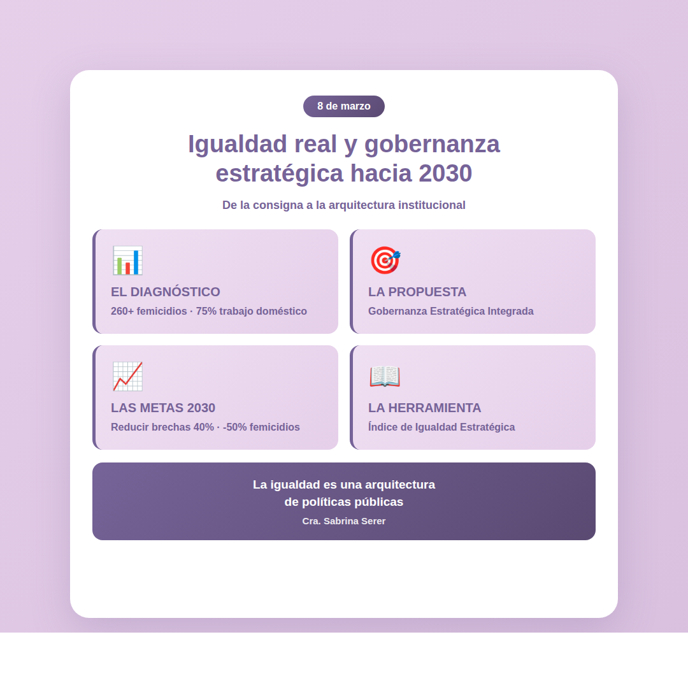
El origen de una lucha que cambió la historia
El Día Internacional de la Mujer tiene su origen en uno de los momentos más simbólicos de la historia política del siglo XX.
El 8 de marzo de 1917, miles de mujeres rusas salieron a las calles de Petrogrado reclamando "pan y paz" en medio de la
Primera Guerra Mundial. Aquella movilización, protagonizada principalmente por obreras textiles, se transformó en una de las
chispas que desencadenaron la revolución social que cambiaría el rumbo político de Rusia.
Entre sus demandas centrales se encontraba un reclamo profundamente revolucionario para la época: el derecho al voto femenino.
Décadas después, la fecha fue institucionalizada globalmente por las Naciones Unidas como una jornada de reflexión sobre las desigualdades
estructurales que enfrentan las mujeres y sobre el rol de los Estados en la construcción de sociedades más equitativas.
Más de un siglo después, el desafío continúa siendo el mismo: transformar los derechos formales en igualdad real.
Violencia de género: el indicador más extremo de desigualdad
En Argentina, la violencia contra las mujeres continúa siendo uno de los indicadores más dramáticos de desigualdad estructural.
Durante 2025 se registraron más de 260 femicidios, lo que equivale aproximadamente a una mujer asesinada cada 33 horas.
Las estadísticas muestran además un patrón persistente:
· La mayoría de los femicidios ocurre en el ámbito doméstico
· En gran parte de los casos el agresor es pareja o expareja
· Cientos de niños y niñas quedan huérfanos cada año como consecuencia directa de estos crímenes
La violencia de género no es únicamente un problema criminal. Es, sobre todo, un problema de arquitectura institucional.
La economía invisible del cuidado
Otro de los factores estructurales de desigualdad es la distribución del tiempo.
En Argentina, las mujeres dedican en promedio entre 6 y 7 horas diarias al trabajo doméstico y de cuidados no remunerado,
mientras que los varones dedican aproximadamente 3 horas.
Esto implica que alrededor del 75% del trabajo doméstico es realizado por mujeres.
Si ese trabajo fuera contabilizado dentro de la economía formal, representaría cerca del 15% del PBI nacional,
convirtiéndose en uno de los sectores económicos más importantes del país.
La desigual distribución del tiempo impacta directamente en:
· Las oportunidades laborales
· El desarrollo profesional
· La autonomía económica
Educación: la revolución silenciosa de las mujeres
En el ámbito educativo se ha producido una transformación estructural.
Actualmente, las mujeres representan aproximadamente el 60% de la matrícula universitaria en Argentina.
Las carreras más elegidas por mujeres se concentran en:
· Salud
· Psicología
· Educación
· Ciencias sociales
· Derecho
Sin embargo, los varones continúan predominando en sectores estratégicos como:
· Ingeniería
· Informática
· Tecnología
Esto muestra que la brecha de género ya no se encuentra en el acceso a la educación, sino en las oportunidades
laborales y los espacios de liderazgo.
Liderazgo femenino: avances con techos de cristal
Argentina ha avanzado en representación política femenina.
Las mujeres ocupan aproximadamente:
· El 40% del Congreso Nacional
· Cerca del 35% de los cargos de decisión en el sector público
Sin embargo, en el sector privado la presencia femenina en directorios empresariales sigue siendo inferior al 15%.
Esto revela la persistencia de techos de cristal en los niveles más altos de toma de decisiones.
De la igualdad declarativa a la igualdad gestionada
Los países que lideran los indicadores globales de igualdad —como Islandia, Noruega y Suecia— no llegaron a esos resultados
por casualidad.
Aplicaron políticas públicas sostenidas durante décadas:
· Sistemas universales de cuidado
· Licencias parentales compartidas
· Paridad política
· Presupuestos con perspectiva de género
Según el índice global elaborado por el World Economic Forum, estos países presentan los niveles más altos de igualdad del mundo.
Gobernanza Estratégica Integrada: un nuevo paradigma
Frente a estos desafíos, la especialista en gestión pública para resultados Cra. Sabrina Serer propone un enfoque innovador basado
en el Modelo de Gobernanza Estratégica Integrada.
Este modelo plantea que las políticas públicas deben articular tres dimensiones clave del Estado:
· Planificación estratégica
· Presupuesto público
· Monitoreo de resultados
El objetivo es superar la fragmentación institucional y construir políticas públicas orientadas a resultados concretos en
la ciudadanía.
Presupuesto Espejo: innovación en gestión pública
Dentro de este enfoque, la Cra. Serer propone el instrumento del Presupuesto Espejo, una metodología que permite visualizar
de manera transversal todos los recursos del Estado destinados a resolver un problema público.
El Presupuesto Espejo consiste en:
1. Identificar un problema estructural (por ejemplo, violencia de género)
2. Mapear todas las políticas públicas que inciden sobre ese problema
3. Integrar esos recursos dentro de un espejo presupuestario transversal
Esto permite:
· Mejorar la coordinación entre organismos
· Transparentar el gasto público
· Evaluar si los recursos realmente generan resultados
Plan de Igualdad 2030: un enfoque basado en resultados
Aplicando el Modelo Serer de Gobernanza Estratégica Integrada, es posible diseñar una estrategia de
igualdad con metas verificables.
Superar las desigualdades de género requiere transformar las políticas públicas en estrategias medibles. La siguiente matriz
presenta un conjunto de objetivos, indicadores y metas hacia 2030 que permiten orientar la acción del Estado bajo un enfoque de
gestión estratégica.
Cuadro estratégico de políticas públicas para la igualdad de género: objetivos, indicadores y metas hacia 2030
Eje estratégico
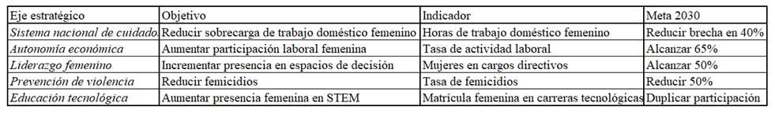
Índice de Igualdad Estratégica 2030
Como herramienta de monitoreo, este enfoque propone un nuevo indicador: Índice de Igualdad Estratégica, basado en tres dimensiones.
Con el objetivo de evaluar la capacidad del Estado para transformar políticas públicas en resultados reales de igualdad, se
propone el Índice de Igualdad Estratégica, una herramienta analítica que permite monitorear la articulación entre gobernanza
institucional, asignación presupuestaria e impacto social.
Índice de Igualdad Estratégica: dimensiones de medición para el monitoreo de políticas públicas de género
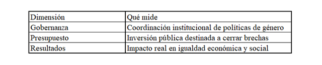
Igualdad de género como política de desarrollo
La igualdad de género no es solamente una agenda de derechos. Es también una estrategia de desarrollo económico y social.
Los países que han logrado mayores niveles de igualdad presentan también:
· Economías más innovadoras
· Mayores niveles de bienestar social
· Mayor productividad económica
📖 Descargá el libro "Diseño y Monitoreo de Políticas Públicas" GRATIS
En este libro, la Cra. Sabrina Serer desarrolla en profundidad el Modelo de Gobernanza Estratégica Integrada y las
herramientas para diseñar políticas públicas orientadas a resultados.
Descargá el libro gratis aquí: Enlace al libro PDF
"La igualdad de género no se alcanza únicamente ampliando derechos. Se alcanza cuando el Estado es capaz de diseñar instituciones
que produzcan resultados. Gobernar el futuro implica planificar estratégicamente, asignar recursos con inteligencia y medir si
las políticas realmente transforman la vida de las personas. La igualdad no es una consigna: es una arquitectura de políticas
públicas."
— Cra. Sabrina Serer
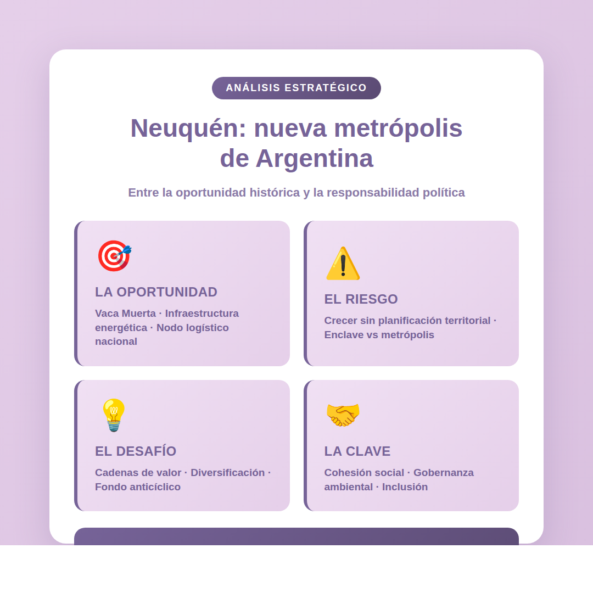
La apertura de sesiones legislativas del 1° de marzo dejó una definición que reconfigura el mapa estratégico nacional: el presidente
Javier Milei afirmó que Neuquén será una de las nuevas metrópolis de la Argentina. No es una frase menor.
Es una declaración de modelo de país.
Desde una perspectiva de gestión pública orientada a resultados, esta afirmación abre oportunidades estructurales —pero también exige
rigurosidad técnica, institucionalidad sólida y responsabilidad política— si realmente se pretende transformar potencial
en desarrollo sostenible.
Un discurso de confrontación en un momento de definición estratégica
La apertura legislativa combinó dos planos bien diferenciados:
· Un tono confrontativo hacia la oposición, con múltiples descalificaciones
· Una narrativa de transformación estructural basada en reformas y expansión exportadora
El problema no es solo retórico. Cuando el discurso presidencial adopta un registro agresivo, el efecto no es neutro:
erosiona consensos, tensiona la convivencia democrática y proyecta hacia el exterior una imagen de fragilidad institucional.
En términos de gobernanza, la previsibilidad política es un activo macroeconómico. La violencia discursiva, en cambio,
incrementa el riesgo país simbólico.
Y en paralelo, mientras se instala el conflicto como eje narrativo, quedan en segundo plano preocupaciones concretas del ciudadano
común: inflación residual, poder adquisitivo, empleo informal y acceso a servicios básicos.
2025: el relato de la estabilización y las reformas
El Presidente presentó 2025 como el año de la consolidación macroeconómica. Los principales ejes mencionados fueron:
· Equilibrio fiscal y reducción del déficit
· Profundización de la reforma laboral
· Apertura comercial y acuerdos internacionales
· Reducción impositiva gradual
· Expansión del complejo energético
Desde el enfoque de administración financiera pública, la pregunta relevante no es solo si se alcanzó el equilibrio contable,
sino qué calidad de gasto se consolidó, qué impacto distributivo generó y qué resultados verificables produjo en
bienestar ciudadano.
La estabilidad macro es condición necesaria. Pero no es suficiente si no se traduce en desarrollo inclusivo.
Neuquén: de provincia energética a metrópolis estratégica
Aquí aparece el punto neurálgico del discurso: el posicionamiento del Gran Neuquén como nuevo epicentro productivo nacional.
El argumento central se apoya en:
· La expansión de Vaca Muerta como motor exportador
· El crecimiento del complejo hidrocarburífero
· El desarrollo minero cordillerano
· La consolidación de infraestructura energética
Si esta proyección se materializa, Neuquén no solo sería un polo energético, sino un nodo logístico, financiero, tecnológico y urbano
de escala nacional.
Esto implica una mutación estructural en la matriz productiva de la Argentina.
Impacto real para la provincia: ¿qué significan estos anuncios en términos concretos?
Si se ejecuta con planificación estratégica, los resultados esperables podrían traducirse en:
1 · Incremento de recursos fiscales provinciales Mayores regalías, mayor recaudación indirecta y posibilidad de
ampliar inversión pública en infraestructura social.
2 · Transformación urbana acelerada Expansión demográfica, presión sobre vivienda, transporte, salud y
educación. Sin planificación territorial, el crecimiento puede convertirse en desorden.
3 · Demanda de capital humano especializado Mayor necesidad de formación técnica y profesional
vinculada a energía, ingeniería, logística y servicios asociados.
4 · Tensión ambiental y social El desarrollo extractivo exige gobernanza ambiental robusta,
mecanismos de participación y políticas de mitigación.
Neuquén puede convertirse en metrópolis. Pero sin diseño institucional, puede convertirse en enclave.
La oportunidad histórica: matriz productiva con valor agregado
Para que Neuquén no sea solo exportadora de recursos primarios, el salto estratégico debe incluir:
· Desarrollo de cadenas de valor locales
· Industrialización asociada al complejo energético
· Fondo anticíclico provincial
· Estrategia de diversificación productiva
· Políticas de innovación tecnológica
La metrópolis no se define por volumen de exportaciones, sino por densidad institucional, capital humano y calidad de vida.
El riesgo: crecimiento sin cohesión social
Mientras se proyecta a Neuquén como centro neurálgico del nuevo mapa productivo, el discurso presidencial omitió una
agenda social concreta para el ciudadano promedio que hoy enfrenta:
· Dificultades para llegar a fin de mes
· Fragilidad laboral
· Incremento del costo de vida
· Brechas territoriales
El desarrollo sin cohesión social es frágil. La estabilidad sin inclusión es transitoria.
Neuquén como motor nacional: responsabilidad política y visión de futuro
Neuquén tiene condiciones objetivas para convertirse en una metrópolis estratégica del siglo XXI. Recursos naturales,
ubicación geopolítica, capital humano en expansión y un ecosistema productivo dinámico.
Pero el verdadero diferencial no será el petróleo ni el gas. Será la capacidad de articular:
· Planificación estratégica
· Presupuesto orientado a resultados
· Gestión pública eficiente
· Gobernanza ambiental responsable
· Inclusión social sostenida
La historia ofrece pocas oportunidades de redefinir el rol de una provincia en el esquema nacional. Esta es una.
Neuquén puede liderar la nueva matriz productiva argentina.
La pregunta no es si crecerá. La pregunta es cómo crecerá, para quiénes y con qué institucionalidad.
Y ahí se juega el verdadero futuro.
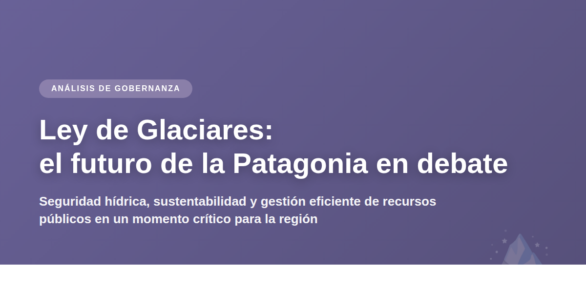
Hoy el Congreso de la Nación discute una reforma al régimen de la Ley 26.639 de Protección de Glaciares y del Ambiente Periglacial. Este debate va más allá de un cambio normativo: pone en juego la seguridad hídrica, la sustentabilidad ambiental y la gestión eficiente de los recursos públicos en una región que enfrenta desafíos climáticos crecientes.
Leer más...
Contexto: qué se propone y qué está en juego
El proyecto de modificación busca redefinir los criterios de protección territorial, reduciendo el alcance sobre ambientes periglaciales y
delegando mayor grado de decisión a las provincias. Este cambio, si bien se presenta como una mejora regulatoria para facilitar
inversiones, altera sustancialmente el equilibrio entre protección ambiental y desarrollo económico.
Desde mi experiencia en gestión por resultados y administración financiera pública, sostengo que las políticas ambientales sólidas
no son frenos al desarrollo: son condiciones estructurales para un crecimiento sustentable y predecible.
Oportunidad estratégica: consolidar la seguridad hídrica.
En la Patagonia, los glaciares no son un paisaje remoto o decorativo: son depósitos de agua dulce esenciales para:
· El abastecimiento urbano y rural
· La producción agropecuaria en cuencas clave
· El balance hídrico en un contexto de variabilidad climática creciente
Desde una perspectiva de gestión pública orientada a resultados, preservar estos reservorios naturales fortalece la resiliencia
de las políticas públicas y reduce futuros costos fiscales asociados a sequías, traslados de agua y mitigación de crisis.
Oportunidad de innovación en administración financiera del sector público
Una normativa ambiental robusta abre puertas para instrumentos financieros sostenibles:
· Fondos fiduciarios para conservación de cuencas y ecosistemas
· Incentivos fiscales para inversiones verdes que respeten límites ambientales
· Pagos por servicios ambientales que internalicen el valor del capital natural
Integrar estos mecanismos en los procesos presupuestarios y planes estratégicos significa maximizar resultados sociales y ambientales
por cada peso invertido, una meta central en la gestión financiera pública eficiente.
Amenaza crítica: debilitamiento de la protección de ecosistemas
La apertura de sectores del ambiente periglacial a actividades extractivas sin criterio científico uniforme genera riesgos concretos:
· Pérdida irreversible de servicios ecosistémicos
· Amenaza sobre biodiversidad emblemática de la Patagonia
· Fragmentación de hábitats con impacto en economías locales vinculadas al turismo sustentable
Desde mi rol de asesora en gestión por resultados, sostengo que los costos de deterioro ambiental superan en largo plazo
los supuestos beneficios de proyectos de corto plazo cuando no están alineados con criterios claros de sostenibilidad.
Amenaza para la predictibilidad en la gestión pública
La delegación de decisiones ambientales clave a múltiples jurisdicciones sin estándares mínimos nacionales crea:
· Fragmentación normativa, dificultando inversiones planificadas a largo plazo
· Mayor riesgo legal e incertidumbre regulatoria, que encarece proyectos públicos y privados
· Debilidad en la gobernanza ambiental, afectando la capacidad de monitoreo y rendición de cuentas
Este tipo de escenarios contradice los principios de una administración pública eficiente y orientada a resultados,
donde la claridad de reglas y la predictibilidad son insumos básicos para la toma de decisiones.
Integrar ambiente y resultados: un llamado a la acción
La Patagonia puede —y debe— liderar un modelo distinto de desarrollo:
· Protección del capital natural como prioridad estratégica: no negociable para seguridad hídrica y calidad de vida
· Marco regulatorio claro y basado en ciencia: para atraer inversiones con garantías de sustentabilidad
· Herramientas financieras e institucionales modernas: que incorporen impacto ambiental como criterio en la asignación de recursos
· Gestión pública con mirada de largo plazo: que conecte planificación estratégica, presupuesto y monitoreo
de resultados ambientales
Conclusión
La Patagonia no es periferia: es reserva estratégica de agua dulce, biodiversidad y estabilidad climática para toda la Argentina.
Y cuando se discute la protección de sus glaciares, no se debate una norma sectorial; se debate el modelo de desarrollo que el Estado
decide financiar, promover y legitimar.
Un país que debilita sus activos ambientales críticos compromete su soberanía hídrica, su previsibilidad fiscal y su capacidad de
generar valor público sostenible. Desde la gestión por resultados sabemos que los costos diferidos del deterioro ambiental
siempre terminan impactando en el presupuesto, en la infraestructura y en la calidad de vida.
La Argentina necesita reglas claras, visión de largo plazo y coherencia entre planificación estratégica, presupuesto y
sostenibilidad. Necesita liderazgo político que entienda que el capital natural no es un obstáculo, sino un activo estratégico que
debe ser gestionado con responsabilidad intergeneracional.
Porque el verdadero desarrollo no se mide solo en exportaciones o en inversiones de corto plazo: se mide en la capacidad del
Estado de proteger lo esencial, garantizar derechos y construir un futuro viable para las próximas generaciones.
Y en ese horizonte, defender los glaciares es defender soberanía, previsibilidad y desarrollo inteligente para la Nación.
No es una reforma técnica: es una definición de poder
La reforma laboral en Argentina impulsada por el gobierno de Javier Milei no puede leerse como un simple aggiornamento normativo.
Se trata de una decisión política estructural que redefine el vínculo entre Estado, mercado y trabajo.
El eje deja de ser la protección del empleo y pasa a centrarse en la reducción del costo laboral y del riesgo empresario. El mensaje
político es claro: el mercado ordena, el Estado se retira y el trabajador se adapta.
Del salario como derecho al salario como variable contingente
Uno de los cambios más sensibles es el nuevo esquema de ingresos frente a enfermedad o accidente.
La reforma habilita situaciones en las que:
Una lesión no laboral podría implicar percibir solo el 50% del salario.
Una enfermedad grave podría garantizar apenas el 75% del ingreso.
Este punto marca un quiebre profundo: el salario como derecho garantizado pasa a convertirse en una variable condicionada al estado
físico del trabajador. Enfermarse deja de ser una contingencia social protegida y pasa a ser un riesgo individual.
En términos políticos, el ajuste se traslada al cuerpo.
Cambio de paradigma: de la protección a la flexibilidad
La Ley de Contrato de Trabajo se construyó sobre un principio central: el trabajador es la parte estructuralmente más débil y debe ser protegido.
La reforma propone un esquema diferente:
Más “libertad contractual”, pero mayor desigualdad estructural.
Menor estabilidad laboral.
Esquemas alternativos de indemnización.
Coberturas parciales ante contingencias.
No es solo una modificación jurídica. Es un cambio de paradigma en el modelo laboral argentino.
Impacto económico y previsional: el costo diferido
Para el sector privado, los beneficios son evidentes:
✔ menor litigiosidad
✔ mayor previsibilidad financiera
✔ reducción de costos indirectos
Para los trabajadores, el saldo es distinto:
✖ mayor precarización laboral
✖ ingresos más inestables
✖ incertidumbre estructural
Además, menores salarios y trayectorias laborales fragmentadas impactan directamente en el sistema previsional argentino,
generando jubilaciones futuras más bajas.
El ahorro fiscal presente puede transformarse en pasivo previsional futuro.
Gobernanza laboral y debilitamiento institucional
La reforma también redefine el rol de los sindicatos y la negociación colectiva, favoreciendo acuerdos individuales por sobre convenios
sectoriales.
Esto no es solo un debate gremial. Es una cuestión de gobernanza institucional: sin actores colectivos fuertes, el Estado pierde capacidad de
ordenar el conflicto y regular el mercado de trabajo.
Conclusión: quién asume el riesgo del modelo
La reforma laboral no elimina derechos de manera explícita. Los redefine, los condiciona y los vuelve inciertos.
El trabajador deja de ser sujeto protegido y pasa a ser gestor individual de su propio riesgo.
La discusión de fondo es estratégica:
¿Qué modelo de desarrollo queremos? ¿Quién lo financia? ¿Quién asume el riesgo?
Porque cuando el ajuste deja de ser fiscal y se vuelve corporal, el costo no desaparece. Se acumula.
Durante décadas, el Estado intentó resolver problemas complejos con respuestas simples. Programas aislados, presupuestos fragmentados,
responsabilidades difusas y una peligrosa ilusión de control marcaron la gestión pública.
Los resultados están a la vista: políticas públicas bien intencionadas, pero estructuralmente incapaces de transformar la realidad.
Hoy, la pregunta central ya no es qué políticas implementar, sino cómo gobernarlas.
En ese punto crítico emerge el Modelo de Gobernanza Estratégica Integrada, una propuesta desarrollada para responder a una necesidad concreta del sector público: recuperar la capacidad real de gobierno frente a problemáticas complejas, multicausales e interministeriales.
Este modelo no surge de la teoría abstracta. Nace del análisis riguroso de la planificación, el presupuesto y la gestión pública real, y se
apoya en una convicción clara:
👉 el Estado no fracasa por falta de recursos, sino por falta de integración estratégica.
Del Estado fragmentado al Estado que gobierna
La fragmentación no es solo administrativa: es profundamente política. Cada ministerio ejecuta, cada área defiende su presupuesto, pero falta una mirada que articule el conjunto..
El Modelo de Gobernanza Estratégica Integrada propone un cambio de paradigma:
pasar de un Estado que administra programas a un Estado
que conduce resultados.
Este cambio se estructura sobre tres pilares indelegables:
· Rectoría política clara, con conducción estratégica y responsabilidades explícitas.
· Corresponsabilidad interministerial, donde cada organismo actúa desde sus competencias legales, alineado a un propósito común.
· Integración entre planificación, presupuesto y gestión, a través de una Matriz de Marco Lógico Madre que ordena decisiones,
recursos y acciones.
Así, el presupuesto deja de ser un ejercicio meramente financiero y se transforma en lo que siempre debió ser: la principal herramienta de gobierno.
Presupuesto espejo: cuando el dinero cuenta una historia coherente
Uno de los aportes distintivos del modelo es la estrategia de programas espejo.
No se trata de crear nuevas estructuras, sino de alinear las existentes bajo un mismo impacto estratégico.
Cada ministerio conserva su autonomía operativa, pero asume un rol definido dentro de una arquitectura común de resultados.
El
gasto público se vuelve trazable, previsible y evaluable.
La política deja de prometer y empieza a demostrar. Y con ello, el Estado recupera credibilidad.
Gobernar es decidir con evidencia
El Modelo de Gobernanza Estratégica Integrada no es neutral. Exige liderazgo, capacidad de decisión y voluntad de rendir cuentas.
Aplicado a políticas como violencia de género, salud mental o seguridad comunitaria, el modelo permite superar abordajes reactivos y avanzar hacia estrategias preventivas, territoriales y sostenibles.
No más parches.
No más políticas dependientes del voluntarismo de una gestión.
Una invitación al liderazgo del futuro
Gobernar la complejidad requiere algo más que experiencia administrativa. Requiere visión sistémica, capacidad de integración y coraje político para cambiar el paradigma.
El Modelo de Gobernanza Estratégica Integrada es una propuesta concreta para quienes entienden que el futuro del Estado no se juega en la suma de programas, sino en la capacidad de articularlos bajo un proyecto político claro.
No es un modelo para gestionar lo existente.
Es un modelo para transformar la forma de gobernar.
Y esa es, sin dudas, la conversación que el Estado argentino necesita dar.
El Presupuesto Provincial 2026 no es únicamente una herramienta financiera: es una decisión política estructural que expresa prioridades, organiza capacidades estatales y anticipa el modelo de desarrollo que una provincia decide construir. En un contexto nacional atravesado por restricciones fiscales y crecientes demandas sociales, Neuquén presenta una singularidad relevante: cuenta con condiciones institucionales, fiscales y de gobernanza que permiten avanzar hacia políticas públicas integradas, orientadas a resultados y con fuerte anclaje territorial.
Leer más...Desde una perspectiva de análisis presupuestario y políticas públicas, el desafío actual no radica en identificar los problemas —la evidencia disponible es contundente— sino en diseñar arreglos institucionales inteligentes que permitan abordarlos de manera transversal, eficiente y sostenible.
La prevención del suicidio como problema público transversal
La prevención del suicidio, especialmente en adolescentes y jóvenes, constituye uno de los desafíos más complejos de la agenda pública
contemporánea. Su carácter multicausal excede ampliamente al sistema de salud y pone de manifiesto la necesidad de intervenciones
integrales, que articulen salud, educación, desarrollo social, niñez, juventudes, empleo y comunidad.
Se trata de un problema público paradigmático:
· No reconoce fronteras sectoriales.
· No se resuelve con una única política.
· No admite respuestas tardías ni fragmentadas.
Precisamente por estas características, la prevención del suicidio resulta especialmente adecuada para ensayar nuevas arquitecturas de
gobernanza presupuestaria.
Qué muestra el Presupuesto 2026 de Neuquén
El Presupuesto 2026 incorpora programas vinculados a salud mental, adicciones, adolescencia y niñez bajo una lógica de Presupuesto Orientado
a Resultados, lo que constituye una fortaleza institucional significativa. Este enfoque permite identificar políticas, objetivos y
responsables.
Sin embargo, el análisis comparativo evidencia una limitación estructural persistente en el sector público argentino:
· Programas que existen, pero operan de manera aislada.
· Recursos que se asignan, pero no convergen estratégicamente.
· Metas que se formulan, pero no dialogan entre sí.
El resultado es un Estado activo, aunque fragmentado, con dificultades para generar impacto sostenido frente a problemas complejos.
Neuquén y sus ventajas comparativas
Neuquén posee ventajas que no todas las jurisdicciones comparten: capacidad de conducción política, orden fiscal relativo y experiencia
en planificación presupuestaria. Estas condiciones habilitan un salto cualitativo: pasar de la coordinación informal a la integración
estratégica de políticas públicas.
En este marco, emerge una oportunidad concreta: la implementación de un Programa Espejo Provincial como herramienta presupuestaria y de
gestión, orientada a alinear recursos, metas e intervenciones de distintos ministerios frente a un objetivo común.
El programa espejo como solución estructural
El programa espejo no implica crear más burocracia ni incrementar el gasto público. Su valor reside en ordenar estratégicamente
lo que ya existe.
Aplicado a la prevención del suicidio, este enfoque permitiría:
· Identificar programas vigentes en salud, educación, niñez, desarrollo social y juventudes.
· Alinear créditos presupuestarios bajo un objetivo transversal único.
· Definir metas comunes, indicadores compartidos y responsabilidades claras.
· Reorientar recursos hacia acciones preventivas y territoriales de alto impacto.
La clave no está en el ministerio ejecutor, sino en la conducción política del conjunto.
Jefatura de Gabinete como nodo estratégico
Desde el punto de vista institucional, la Jefatura de Gabinete se presenta como el ámbito natural para liderar esta estrategia,
no como ejecutora sectorial, sino como órgano de coordinación, planificación y evaluación. Su rol permitiría:
· Asegurar coherencia entre políticas públicas.
· Monitorear resultados transversales.
· Introducir correcciones en tiempo real.
· Rendir cuentas sobre impactos concretos.
Este esquema fortalece la gobernanza, evita superposiciones y eleva la calidad del gasto público.
Una experiencia piloto con potencial expansivo
La prevención del suicidio puede y debe funcionar como caso piloto de este enfoque. No solo por la urgencia del problema, sino porque
permite demostrar que otra forma de gestionar el presupuesto es posible.
Una vez validado, el esquema resulta plenamente replicable en otras problemáticas transversales:
· Niñeces y adolescencias.
· Violencias.
· Consumos problemáticos.
· Empleo joven.
· Desarrollo territorial equilibrado.
Presupuesto como herramienta de transformación
Neuquén se encuentra en una posición estratégica para liderar una experiencia innovadora de gestión pública subnacional. No se trata
de crear nuevas políticas, sino de gobernar mejor las que ya existen. No de gastar más, sino de gastar con sentido estratégico.
Cuando el presupuesto deja de ser un ejercicio administrativo y se convierte en una herramienta de conducción política, el Estado recupera capacidad transformadora. Y cuando esa transformación se orienta al cuidado de la vida, el impacto trasciende una gestión y se consolida como política de Estado..
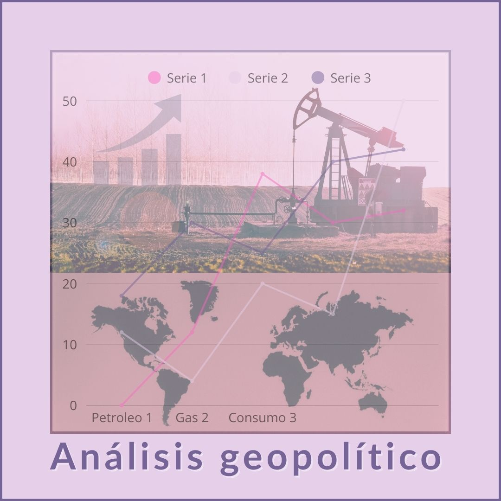
En los primeros días de enero de 2026, una operación militar liderada por Estados Unidos resultó en la captura de Nicolás Maduro, quien fuera presidente de la República Bolivariana de Venezuela, y su traslado a territorio estadounidense para enfrentar cargos por narcotráfico. Esta acción, sin precedentes en la región —y comparada por analistas con la invasión estadounidense a Panamá en 1989—, desencadenó una reacción global crítica, con países aliados y adversarios denunciando la intervención como una violación de la soberanía venezolana e incluso como un “crimen de agresión” ante las Naciones Unidas.
Leer más...
Petróleo: la razón subyacente de una crisis con efectos geopolíticos
Venezuela continúa siendo poseedora de las mayores reservas de petróleo probadas del planeta. Sin embargo, la producción ha colapsado desde
niveles superiores a los 3 millones de barriles diarios en décadas anteriores hasta poco menos de 1 millón en la actualidad, como consecuencia
de la mala gestión, las sanciones internacionales y el progresivo deterioro de la infraestructura petrolera.
Aunque el volumen actual de petróleo venezolano en el mercado global es relativamente marginal, su enorme potencial sigue pesando sobre las estrategias de las potencias energéticas. Poco después de la captura de Maduro, el presidente estadounidense Donald Trump declaró que Estados Unidos planea “administrar temporalmente” Venezuela y permitir que grandes empresas petroleras estadounidenses reconstruyan y exploten sus reservas, en un intento por recuperar riqueza para el país y, supuestamente, “revitalizar” la industria petrolera venezolana.
Este discurso reactivó los debates sobre las verdaderas motivaciones del gobierno de Trump. Si bien se esgrimen razones vinculadas a la seguridad —como la lucha contra el narcotráfico y la restauración de la democracia—, la relevancia estratégica del petróleo venezolano y los intereses de las grandes petroleras aparecen como factores constantes en la narrativa política y económica del caso.
Donald Trump: ¿estrategia regional o intereses energéticos?
La intervención se produce en un contexto en el que Trump ha señalado de manera reiterada que su administración busca asegurar recursos
energéticos y posicionar a Estados Unidos como potencia dominante en el mercado petrolero global. Sus declaraciones posteriores a la
operación subrayaron la intención de que empresas como Chevron, ExxonMobil o ConocoPhillips ingresen al sector venezolano para reconstruir
su capacidad productiva, incluso sugiriendo mecanismos para compensar costos o inversiones de estas firmas con ingresos petroleros futuros.
Este enfoque —defendido por sectores de la base política de Trump como coherente con la defensa de los intereses estadounidenses— representa una reinterpretación del discurso “America First”, que ahora habilita la intervención directa para asegurar activos estratégicos. Como consecuencia, se han generado tensiones con gobiernos latinoamericanos, particularmente con aquellos críticos de la intervención directa, y se han reavivado las preocupaciones sobre una renovada influencia estadounidense en la región.
Impactos en el mercado petrolero global y el precio del crudo
En el mercado energético internacional, los efectos de la crisis venezolana han sido mixtos. En el corto plazo, el repunte de precios fue
moderado y algunas referencias petroleras globales —como el Brent— registraron ajustes al alza ante expectativas de una mayor oferta futura.
Sin embargo, el potencial de una oferta adicional significativa desde Venezuela dependerá de décadas de inversión y reconstrucción de
infraestructura, lo que limita cualquier impacto inmediato.
Analistas advierten que, si bien los movimientos geopolíticos pueden generar episodios de volatilidad, el equilibrio estructural del mercado energético global sigue dominado por múltiples fuentes de producción, así como por la transición hacia energías alternativas. En ese marco, los efectos sobre los precios no necesariamente serán disruptivos en el corto plazo.
Vaca Muerta: riesgos y oportunidades para Neuquén
Para Neuquén y la Argentina, la caída de Maduro y la potencial reconfiguración del mercado petrolero plantean un escenario con múltiples aristas:
1· Presión sobre los precios internacionales del crudo
Algunas consultoras advierten que la expectativa de un eventual incremento de la producción venezolana podría sumar presión a la baja sobre
los precios del petróleo, afectando la competitividad de recursos no convencionales como Vaca Muerta, cuya rentabilidad es especialmente
sensible a las cotizaciones internacionales.
2· Redirección de inversiones energéticas
Si el nuevo marco geopolítico incentivara una reorientación de capitales hacia Venezuela por parte de petroleras norteamericanas, podría
generarse una competencia indirecta por la asignación de inversiones, que en otro contexto habrían sido destinadas a proyectos no
convencionales en la Argentina.
3· Mecanismos de resiliencia y diversificación
Al mismo tiempo, Vaca Muerta ha consolidado una presencia significativa en las exportaciones energéticas, contribuyendo a la generación de
divisas y al fortalecimiento del sector hidrocarburífero nacional. La Argentina tiene la oportunidad de posicionarse como proveedor confiable
e independiente, aprovechando su estabilidad institucional en comparación con el complejo escenario venezolano.
Conclusiones estratégicas
La caída de Maduro y la intervención estadounidense representan una nueva fase en la relación entre la geopolitización del petróleo y la
política en América Latina. Las declaraciones y acciones de Trump sugieren que, más allá del discurso de seguridad, el acceso y el control
de recursos energéticos estratégicos ocupan un rol central en la agenda estadounidense, con impacto directo sobre las dinámicas regionales.
Para Neuquén, el desafío será adaptarse a un entorno internacional en reconfiguración, donde los precios del crudo pueden enfrentar presiones a la baja, pero donde también la diversificación, la inversión extranjera y la consolidación de Vaca Muerta como actor clave pueden generar resiliencia y ventajas comparativas en el largo plazo.
El cierre de este año representa un hito fundamental en mi trayectoria, donde la formación académica y el trabajo en territorio se unieron para consolidar una visión clara del Estado. Como profesional de Ciencias Económicas, culminé la Especialización en Gestión Pública para Resultados (UBA-ASAP), una decisión estratégica para entender el presupuesto no sólo como un recurso financiero, sino como una herramienta ética y política orientada al bienestar real de las personas. Soy hoy la única profesional en Río Negro y Neuquén con esta especialización, lo que refuerza mi compromiso de poner este rigor técnico al servicio de nuestra provincia.
Leer más...Durante los últimos meses, el trabajo de campo en la comunidad de Ruca Choroy permitió traducir la interculturalidad en datos concretos, asegurando que el presupuesto responda a las necesidades territoriales reales 🏔️. Esta experiencia fue el motor para desarrollar los "Programas Espejo", una metodología innovadora en Argentina que busca integrar la planificación y los resultados de forma interministerial. Aplicamos esta lógica a la prevención del suicidio, una política pública crítica en una provincia donde la tasa de mortalidad por esta causa demanda una gestión de excelencia y una coordinación inmediata entre salud mental y administración.
La validación de este trabajo por parte de Marcos Makón, referente indiscutido de la administración financiera en América Latina, y de Nora Garrochategui, marca un antes y un después en mi carrera ✨. El hecho de que expertos de este calibre consideren mi propuesta de "Presupuesto Espejo" como un insumo valioso para el desarrollo de políticas actuales confirma que vamos por el camino correcto: el de la técnica con sensibilidad. Gestionar con evidencia permite que el Estado deje de reaccionar ante las crisis y empiece a conducir los procesos de cambio con responsabilidad.
De cara al futuro inmediato, el objetivo para el 2026 es ambicioso pero posible: avanzar en la creación de una Secretaría Provincial de Monitoreo y Evaluación 📈. Buscamos instalar una arquitectura de gobernanza que permita medir el gasto público, territorializar las decisiones y consolidar modelos que puedan replicarse en otras problemáticas sociales transversales. No se trata simplemente de invertir más, sino de hacerlo con inteligencia para que cada indicador se traduzca en una oportunidad de vida para nuestros vecinos.
Cierro el 2025 con la convicción de que el conocimiento cobra sentido cuando se pone al servicio del bien común 🚀. Agradezco a quienes confiaron en esta mirada estratégica y a quienes me acompañaron en cada kilómetro recorrido por el interior de nuestra provincia. El desafío que viene nos encontrará preparados para liderar una gestión moderna, transparente y, por sobre todo, profundamente humana.
1️⃣La nueva política ya llegó (y vino con calculadora en mano) 🧮✨
La reciente decisión del alcalde de Nueva York de nombrar a un experto en presupuesto como su principal colaborador no es un gesto
tecnocrático: es una señal global de cambio 🌍. El mundo político comienza a comprender que los Estados, para recuperar su capacidad
de acción, necesitan dirigencias que combinen sensibilidad social con dominio técnico.
Esta intuición coincide con lo que Oscar Oszlak plantea desde hace décadas: la capacidad estatal no se construye con discursos 🎙️, sino
con instituciones capaces de “producir orden y bienes públicos” a través de decisiones coherentes y ejecutables. Gobernar implica articular
voluntad política con soporte técnico, administrativo y financiero 📑.
El humor político de la época lo resume bien: después de años de épica sin planillas 📊, la política global descubrió que sin presupuesto
no hay épica que sobreviva. La calculadora —y su correlato metodológico— se transformó en un instrumento político de primer orden, incluso
para quienes antes la veían como símbolo de frialdad. Hoy, planificar es un acto de justicia ⚖️.
2️⃣ Liderazgos híbridos para una ciudadanía cansada de promesas vacías 🤝🌎
La sociedad contemporánea, especialmente en América Latina, ya no compra humo 🚫. Busca liderazgos que sepan combinar empatía con resultados.
Dirigentas y dirigentes capaces de escuchar, pero también de ejecutar. En este punto, las teorías de Luis F. Aguilar Villanueva y Guy Peters
se vuelven centrales: gobernar ya no es solo decidir, sino coordinar actores, gestionar complejidades y asegurar resultados verificables 🧩.
A esto se suma la mirada crítica de Charles Lindblom, quien nos recuerda que la toma de decisiones públicas es incremental, y que los sistemas
políticos avanzan mediante pasos sucesivos guiados por evidencia 🔍. En ese marco, las dirigencias capaces de traducir planificación
estratégica y presupuesto en políticas reales —con impacto social y territorial— se vuelven indispensables.
América Latina está dejando atrás el vaivén entre líderes carismáticos sin gestión y tecnócratas sin legitimidad 🌱. Las sociedades piden algo
más profundo: una dirigencia ética, plural y diversa, capaz de transformar el presupuesto en una herramienta para redistribuir oportunidades,
garantizar derechos y reducir desigualdades históricas 💜, especialmente las que afectan a mujeres, disidencias y niñeces.
3️⃣ Presupuesto: la piedra angular de la política que viene 💰📈
Lindblom nos enseñó que las políticas se construyen paso a paso 🚶♀️. Oszlak, que la capacidad estatal es el corazón de cualquier proceso
transformador ❤️. De esa articulación se desprende una verdad contundente: sin presupuesto, no hay política; y sin capacidad para gestionarlo,
no hay Estado que sostenga la promesa de desarrollo 🏛️.
Por eso, la designación de perfiles con formación en presupuesto, planificación y gestión de resultados está dejando de ser una excepción para
convertirse en una tendencia 🔄. Las sociedades comienzan a entender que la eficiencia, la transparencia y la orientación a resultados no son
lujos tecnocráticos: son la nueva infraestructura de la legitimidad democrática 💡.
En este escenario, América Latina tiene una oportunidad única 🌎. Sus mujeres líderes —desde ministras y gobernadoras hasta gestoras
comunitarias— están demostrando que se puede administrar con sensibilidad, firmeza y visión estratégica 👩💼. Que planificar también es cuidar.
4️⃣ Un liderazgo con rostro humano y mirada regional 👁️🤲
Para el ciclo político que se abre hacia 2027, Argentina necesita liderazgos con mirada integral, solvencia técnica, sensibilidad social y
ética pública 🇦🇷. Personas capaces de convertir restricciones en decisiones inteligentes y decisiones en resultados que mejoren vidas reales,
especialmente las de las infancias y juventudes que siguen siendo la deuda moral más evidente de la región 👧🏽🧒🏻.
Reconstruir la confianza en las instituciones implica una tarea colectiva 🤲: fortalecer el Estado, modernizar su gestión y hacerlo más
transparente y participativo. Significa entender que el presupuesto no es un documento contable, sino el mapa de nuestras prioridades como
sociedad 🗺️.
✨ Reflexión final
💬 Liderar con conocimiento, cuidar con estrategia
Argentina enfrenta un desafío estructural: conducir la transformación del Estado con visión de futuro y responsabilidad social 🌅. Para lograrlo,
las áreas críticas —desde Economía hasta Políticas de Género y Diversidad— deberán estar en manos de dirigencias que integren conocimiento técnico,
mirada humana y compromiso ético 💪.
Como sostiene Oscar Oszlak, la capacidad estatal es una construcción histórica 🏗️. Esa construcción requiere de liderazgos preparados para
gobernar el país real, no el país discursivo. Liderazgos que comprendan que gestionar no es solo administrar recursos, sino construir
confianza, redistribuir poder y garantizar derechos ⚖️.
El próximo ciclo político no demandará improvisación. Demandará conducción 🚀.
Conducción capaz de transformar la planificación y el presupuesto en políticas que dignifiquen vidas 💜.
Conducción que sepa mirar al sur y pensar desde América Latina.
Porque gobernar bien también es un acto de amor 💖.
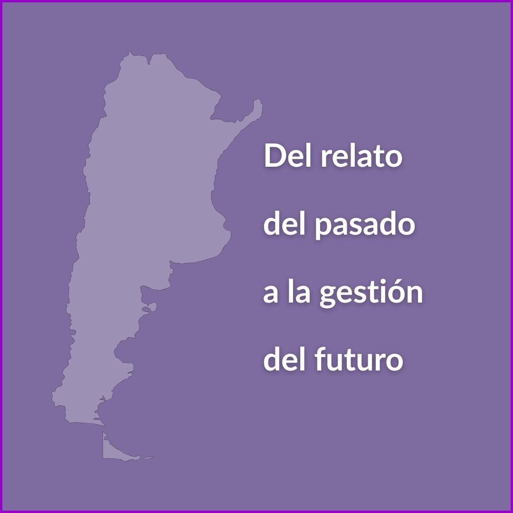
I. El peronismo en su encrucijada histórica
El peronismo nació como un proyecto profundamente transformador: organizó el Estado, integró a las y los trabajadores y construyó movilidad
social. Durante décadas, fue el vehículo político del ascenso y la protección social de las mayorías. Sin embargo, el país y la sociedad
cambiaron a una velocidad que el partido no logró acompañar.
Hoy, esa matriz doctrinaria de justicia social, soberanía e inclusión enfrenta un dilema existencial: cómo seguir representando a un pueblo
diverso en una sociedad que transformó sus códigos culturales, sus aspiraciones y su modo de decidir.
El diagnóstico no requiere dramatismo, sino precisión. La debacle no fue súbita: fue la consecuencia de un divorcio progresivo entre discurso, gestión y resultados. Un movimiento que históricamente se definió por su eficacia política terminó siendo percibido como ineficiente, autorreferencial y desconectado de la agenda real de la ciudadanía.
II. Causas estructurales de la decadencia
1. Desalineación entre relato e impacto.
El peronismo supo construir un relato potente en torno al bienestar, pero perdió la capacidad de demostrarlo con datos y resultados.
La gestión sin métricas se volvió discurso sin credibilidad.
2. Envejecimiento institucional.
Las estructuras partidarias, pensadas para un país industrial y sindicalizado, hoy funcionan en un entorno de economía fragmentada,
digital y atravesada por desigualdades de género y territorio. El modelo de representación envejeció; ya no intermedia demandas, sino
que las demora.
3. Déficit de transparencia y profesionalización.Envejecimiento institucional.
La ciudadanía exige integridad, eficiencia y rendición de cuentas. El partido, atrapado en lógicas de lealtades personales, no generó
mecanismos de evaluación ni de selección basados en mérito. La consecuencia: pérdida de confianza transversal.
4. Falta de renovación generacional, paritaria y narrativa.
El liderazgo político no se transfiere solo por biología ni por apellido; se legitima en la capacidad de planificar, escuchar y demostrar
resultados tangibles. El peronismo, atrapado entre la nostalgia y la interna, no formó la cantera de cuadros técnicos, políticos y feministas
que exige el siglo XXI.
III. Un cambio de paradigma: del control político al gobierno basado en evidencia
La respuesta no está en un cambio cosmético ni en un nuevo eslogan. Está en una refundación metodológica: gobernar desde la evidencia, con
planificación estratégica, presupuesto orientado a resultados y evaluación de impacto.
En otras palabras, pasar de la “gestión política” a la política gestionada con evidencia.
Carol Weiss, una de las voces más reconocidas en análisis de políticas públicas, sostenía que “las políticas efectivas no se imponen: se
aprenden, se prueban y se corrigen.” Esa es la transición pendiente: que el peronismo deje de defender el pasado y empiece a aprender del
futuro.
IV. Hacia un nuevo peronismo: “Peronismo por Resultados”
Propongo una hoja de ruta que combine los valores históricos del movimiento con herramientas contemporáneas de gestión:
1. Redefinir el contrato social en clave medible y equitativa.
Cada promesa política debe traducirse en un indicador verificable: reducción de la pobreza, cobertura de primera infancia, acceso a salud
integral, empleo joven, inclusión de mujeres y diversidades. No más consignas vacías: metas, líneas base y resultados públicos.
2. Modernizar la arquitectura de gestión.
Implementar una Agenda Nacional de Resultados vinculada al presupuesto por programas, donde cada peso invertido tenga un impacto
verificable y comunicable.
3. Instituir un “Dashboard de Resultados Peronistas”
Formar nuevas generaciones —con paridad de género y enfoque federal— en planificación, análisis de datos, evaluación y gestión de
políticas públicas. Profesionalizar la política no es tecnocratizarla: es volverla competente y ética.
4. Instituir un “Dashboard de Resultados Peronistas”
Una plataforma pública que muestre, programa por programa, qué se prometió, cuánto se ejecutó y qué se logró. Transparencia activa y
credibilidad en tiempo real.
5. Reformar la gobernanza interna.
Promover mecanismos de competencia interna basados en desempeño y compromiso con los resultados. La lealtad al proyecto no se mide
por obediencia ni silencio, sino por la eficacia colectiva.
V. Aprender del mundo sin perder la identidad
El New Labour británico logró reconfigurar la socialdemocracia con una combinación de ética pública, comunicación moderna y gestión profesional.
Los países nórdicos consolidaron pactos sociales basados en eficiencia estatal y bajo conflicto distributivo.
Ambos modelos demostraron que la eficiencia no es enemiga de la justicia social, sino su garante.
Argentina no necesita copiar modelos ajenos, sino reinterpretar sus lógicas desde nuestra identidad latinoamericana: políticas sostenibles,
evaluadas y fiscalmente responsables. Un peronismo que hable con datos, que mida, que rinda cuentas y vuelva a generar confianza desde su propio
territorio cultural.
VI. Leer el nuevo voto argentino
El votante argentino ya no elige por identidad, sino por desempeño percibido y coherencia. La volatilidad electoral refleja una ciudadanía
que castiga la ineficiencia y premia la autenticidad.
Las juventudes no votan por ideología, sino por expectativas: trabajo digno, estabilidad, inclusión digital y un Estado que no las trate como
enemigas, sino como protagonistas.
El desafío es comprender que la gente no vota por nostalgia, sino por esperanza viable.
VII. Conclusión: reconstruir el peronismo desde la eficacia, la integridad y la equidad
El peronismo debe dejar de discutir quién conduce y empezar a discutir qué resultados ofrece.
Su futuro no dependerá de un nuevo liderazgo carismático, sino de una generación de dirigentas y
dirigentes capaces de planificar, ejecutar y evaluar con rigor técnico, ética pública y sensibilidad social.
El liderazgo contemporáneo se construye demostrando resultados, no acumulando cargos.
Si el movimiento logra dar este salto —de la retórica a la evidencia, del relato a la gestión— volverá a
ser lo que alguna vez fue: la fuerza más poderosa de transformación social y emancipación colectiva de la Argentina.
Epílogo
No se trata de abandonar las banderas históricas, sino de rediseñarlas con indicadores, integridad, equidad y método.
El peronismo del siglo XXI será aquel que se mida, se audite y rinda cuentas con orgullo.
Ese será el verdadero acto de justicia social contemporánea.
Cra. Sabrina Serer
En la Argentina de hoy, cada vida perdida por violencia de género nos enfrenta a una pregunta esencial: ¿cuántas vidas más estamos
dispuestos a perder antes de hacer política con coraje y resultados?
La tragedia ocurrida en Neuquén no es un caso aislado. Es el reflejo de una sociedad que parece anestesiada frente a la violencia, pero
que debe ser el punto de partida para una nueva generación de políticas públicas que no quieren solo hablar del problema, sino resolverlo.
Como profesional de la gestión pública, sé que el dolor necesita transformarse en política efectiva. La respuesta no está únicamente en más leyes, sino en una nueva forma de gobernar basada en la Gestión para Resultados (GpR). No se trata de gastar más: se trata de gastar mejor, con propósito y evidencia.
I· La Violencia Estructural y la Necesidad de Medir en Vidas Salvadas
La violencia de género no es un hecho aislado, sino un patrón estructural. Como explica Rita Segato, no surge del impulso, sino de una
pedagogía de la crueldad que reproduce dominio y poder. Cada número de víctima registrado en 2024 es una vida truncada y una política que
llegó tarde.
Por ello, propongo una estrategia provincial de Gestión para Resultados en Violencia de Género y Diversidad. Un plan integral, interministerial
y evaluable, donde cada peso del presupuesto tenga un destino claro, cada acción un indicador, y cada meta un plazo de cumplimiento.
II· Estrategia Presupuestaria "Espejo": El Plan para Neuquén
Mi propuesta combina la sensibilidad social con la disciplina técnica. El plan integral propuesto para el primer año de ejecución tiene
un costo total estimado de $2.384.535.000 y se basa en las siguientes líneas de acción concretas y medibles:
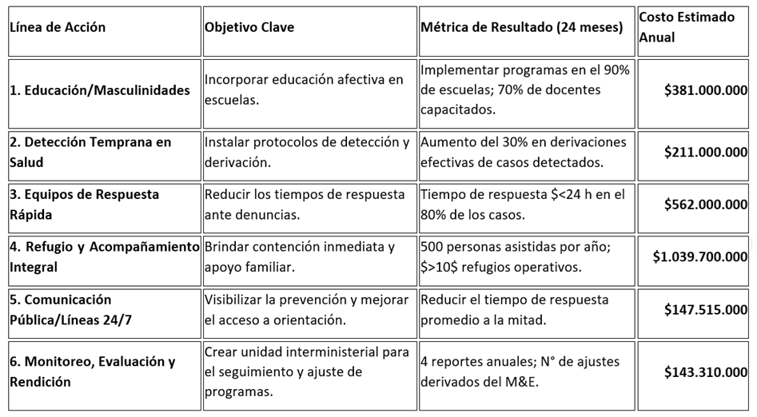
III· El Espejo de Escocia: Gestión que Salva Vidas
Escocia demuestra que la planificación y la evaluación salvan vidas. Su modelo “Equally Safe” logró:
• Reducción del 37% en homicidios de mujeres por razones de género.
• Aumento del 42% en denuncias tempranas y derivaciones a servicios de apoyo.
• Implementación de educación en masculinidades en el 95% de sus escuelas.
Su éxito radicó en corregir las fallas estructurales argentinas: articulación entre justicia, salud y protección social; prevención temprana
en educación; y un sólido sistema de datos para medir el impacto. Lo hicieron con presupuesto, datos y trabajo articulado, no con slogans.
IV· El Desafío Político: Liderazgo y Gestión con Perspectiva
Neuquén tiene la oportunidad de ser la primera provincia en construir una Gestión para Resultados con Perspectiva de Género. Esto es
una decisión política que requiere liderazgos con empatía, firmeza y capacidad de gestión.
Gobernar con empatía es también hacer política con datos, con presupuesto y con resultados. En eso creo profundamente: en una política que
abrace, pero que también mida; que emocione, pero que también rinda cuentas; que proteja, pero que también transforme.
Cada indicador de ese cuadro representa una vida, una historia, una oportunidad. El dolor no puede ser el punto final, sino el inicio de una
política con propósito.
Neuquén puede ser el ejemplo. Y yo quiero ser parte de esa generación que no teme mirar de frente la violencia y decir: basta, pero con gestión.
Un análisis sobre las proyecciones sociales, económicas y democráticas en tiempos de ruptura
Por Sabrina Serer
Un país frente al espejo
Argentina atraviesa un punto de inflexión. La discusión sobre si el gobierno de Javier Milei puede —o no— sostener su proyecto económico
y político trasciende a la figura del presidente: interpela a toda la dirigencia, al sistema político y a la cultura institucional del
país.
Detrás de cada dato económico y de cada disputa parlamentaria, se esconde una pregunta de fondo: ¿tenemos, como Nación, la madurez necesaria para realizar los cambios estructurales que hace décadas postergamos? ¿O seguiremos repitiendo el ciclo eterno de promesas, crisis y frustraciones colectivas?
Entre la austeridad y la pobreza: luces y sombras de un experimento
Si bien el actual gobierno, muestra una tendencia descendente
con relación a la inflación —flagelo histórico del país—, los costos sociales han sido altos: aumento de la pobreza, caída del empleo formal
y reducción de la capacidad adquisitiva de los sectores medios y bajos.
El modelo libertario se consolidó en torno a un eje claro: ajuste del gasto, eliminación de subsidios y reconfiguración drástica del Estado.
Pero detrás de esa aparente “eficiencia fiscal” se esconde un deterioro profundo del tejido social, que amenaza la estabilidad política.
Argentina corre el riesgo de repetir un viejo patrón: estabilidad económica efímera, sostenida sobre una inestabilidad social y política
creciente.
Escenarios posibles: continuidad o reacción
El escenario de corto y mediano plazo puede bifurcarse en dos direcciones:
Si Milei logra sostener el control político y legislativo, su proyecto continuará bajo un esquema de austeridad y liberalización,
con inflación controlada, pero sin crecimiento sólido.
Si pierde poder o enfrenta un Congreso adverso, podría surgir un escenario de recomposición política: concesiones al peronismo o
a sectores provinciales, mayor gasto público y un retorno parcial al intervencionismo estatal.
Ambas alternativas enfrentan el mismo desafío: la falta de consenso estructural sobre un modelo de desarrollo. Argentina oscila entre dos
paradigmas —mercado y Estado— sin resolver cómo construir instituciones que garanticen previsibilidad, transparencia y justicia social
simultáneamente.
Los “políticos de siempre”: ¿inercia o transformación?
Esta es, quizás, la cuestión más incómoda.
¿Realmente los políticos de siempre desean cambiar el sistema que los sostiene?
La respuesta, lamentablemente, sigue siendo ambigua.
Argentina tiene una dirigencia con alta capacidad de adaptación, pero baja vocación de transformación. Los partidos tradicionales no suelen
reformar estructuras que amenazan sus propias fuentes de poder: clientelismo, redes provinciales, empleo público sobredimensionado,
entre otras.
El problema no es solo económico. Es cultural. La cultura del privilegio, la impunidad y la lógica de la “lealtad política” por
encima de la competencia y la transparencia son los verdaderos obstáculos al desarrollo.
Democracia: ¿resiste o se degrada?
Según los indicadores internacionales, Argentina sigue siendo una democracia libre (Freedom House), pero defectuosa
(The Economist Democracy Index).
Esto significa que mantiene elecciones limpias, libertad de prensa y derechos civiles, pero sufre de instituciones
débiles, justicia politizada y escasa confianza social.
La democracia argentina, más que amenazada por un golpe o una autocracia, está siendo corroída lentamente por la
ineficacia, la desconfianza y la polarización.
Y esa degradación silenciosa es más peligrosa que cualquier crisis visible.
La gran deuda: cambiar el modo de gobernar
El país necesita una refundación, pero no desde la destrucción, sino desde la reconstrucción
institucional. Para ello, se requieren cinco consensos urgentes:
· Un diagnóstico común sobre los problemas estructurales: inflación, educación, pobreza e ineficiencia estatal.
· Reforma profunda del Estado, no solo ajuste: profesionalización, meritocracia, evaluación de políticas públicas y transparencia presupuestaria.
· Política económica sostenible, que combine disciplina fiscal con justicia social.
· Transformación cultural, que promueva responsabilidad ciudadana, respeto a la ley y cultura del mérito.
· Instituciones fuertes, que sobrevivan a los gobiernos y garanticen rendición de cuentas.
El mensaje a la dirigencia
A la clase política —de ayer y de hoy— hay que decirle con claridad: no hay destino posible sin coraje. Argentina no necesita más discursos
de coyuntura. Necesita estadistas capaces de pensar a veinte años, no a la próxima elección.
Los cambios estructurales y culturales que el país demanda no se resuelven desde el marketing ni desde el enojo. Se resuelven con políticas
públicas sostenidas, con instituciones estables, con planificación, con evaluación, y con una ética pública que deje de ser una palabra
vacía.
Epílogo: refundar la esperanza
La historia muestra que los países que lograron salir de su espiral de crisis —España, Chile, Corea del Sur, Irlanda— lo hicieron cuando
lograron un pacto entre política, sociedad y conocimiento.
Quizás esa sea nuestra oportunidad: transformar la indignación en inteligencia colectiva.
Y convertir, de una vez por todas, el “que se vayan todos” en “que lleguen los mejores”.
Dejar llegar a los mejores es, también, un acto de justicia generacional.
Porque el mérito, la formación y la ética no pueden seguir siendo enemigos del poder, sino su condición de existencia.
Argentina no necesita más líderes mesiánicos, ni outsiders sin preparación.
Necesita gobernantes competentes, evaluables, responsables y comprometidos con el bien común.
Que lleguen los mejores.
Pero, sobre todo: que los dejen llegar.
Convertirme en mamá me cambió la forma de mirar la realidad. Las cifras de pobreza dejaron de ser solo números para transformarse en imágenes concretas: un plato vacío, una escuela sin calefacción, un hospital sin turnos. Hoy en la Argentina más de la mitad de las niñas y niños crecen en hogares pobres, y las políticas de ajuste que se aplican bajo la lógica de la “motosierra” están profundizando esa vulnerabilidad.
Leer más...
Infancias argentinas: cinco años de retroceso
En el último lustro atravesamos dos modelos de gestión distintos. Uno, con sus
falencias, buscó sostener redes de protección social. El otro priorizó la austeridad fiscal como meta central. El resultado está a la
vista: provincias enteras —sobre todo en el NOA y el NEA— quedaron aún más expuestas, y en el conurbano bonaerense los recortes se
sienten en comedores, escuelas y hospitales.
Las consecuencias son directas:
1. En salud, menos insumos, vacunas y atención primaria.
2. En educación, recortes en programas y comedores que sostienen la asistencia escolar.
3. En la psiquis infantil, la exposición constante al estrés de la pobreza genera daños neurológicos y emocionales irreversibles.
La niñez no puede esperar. La infancia es una ventana única: lo que no se garantiza en esos años, no se recupera jamás.
Comparación internacional: el caso de Uruguay
Uruguay comparte con Argentina desafíos como economías pequeñas y alta dependencia
de contextos internacionales. Sin embargo, en materia de niñez marcó una diferencia clave: construyó políticas de Estado que trascienden
los gobiernos.
Algunas políticas que le dieron resultados:
1. Sistema Nacional Integrado de Cuidados (SNIC): ofrece atención y estimulación temprana a la primera infancia con centros de
calidad, combinando educación, salud y cuidado comunitario.
2. Asignaciones familiares y transferencias focalizadas: garantizan un ingreso mínimo para hogares con niños, con condicionalidades
en salud y educación.
3. Centros CAIF (Centros de Atención a la Infancia y la Familia): espacios comunitarios que combinan cuidado, nutrición y
estimulación temprana en barrios vulnerables.
4. Inversión sostenida en salud y vacunación universal: aun en contextos de restricción fiscal, la cobertura de vacunación
infantil se mantuvo como prioridad.
El contraste con Argentina es claro: mientras acá los vaivenes políticos recortan y reinstalan programas, en Uruguay se consolidaron
estructuras permanentes que no dependen del signo político de turno.
Hacia un modelo argentino para la niñez
De esta comparación se desprende una lección evidente: lo que funciona es la
continuidad, la previsibilidad y la integralidad. Argentina podría avanzar en un modelo que combine:
1. Presupuesto espejo y protegido para la infancia, con fondos coparticipables y priorizados según necesidades provinciales.
2. Centros integrados de cuidado y desarrollo infantil, inspirados en la experiencia uruguaya de los CAIF, que articulen salud,
nutrición y educación en cada territorio.
3. Transferencias universales y sostenidas, con foco en la primera infancia, ajustadas por inflación para no perder poder adquisitivo.
4. Blindaje sanitario y educativo, asegurando que vacunación, comedores escolares y programas de salud mental no sean variables de ajuste.
5. Monitoreo y evaluación con transparencia, para medir impacto y corregir políticas en tiempo real.
¿Por qué invertir en la niñez es la decisión más sabia?
Cuando hablamos de cuidar a las infancias, no se trata solo de un imperativo
ético. También es una apuesta estratégica al futuro de la Argentina. Los estudios muestran que cada peso invertido en la primera infancia
retorna multiplicado en desarrollo humano, productividad y cohesión social.
1. Mejor salud a lo largo de la vida: niños bien alimentados y vacunados hoy serán adultos más sanos, con menos costos en el sistema
de salud.
2. Mayor rendimiento educativo y laboral: una infancia con estimulación temprana y educación de calidad desarrolla más capacidades
cognitivas y socioemocionales, lo que se traduce en mayor empleabilidad y mejores ingresos en la adultez.
3. Reducción de la desigualdad estructural: invertir en niñez corta la transmisión intergeneracional de la pobreza. Los hijos de
hogares vulnerables tienen una oportunidad real de movilidad social.
4. Más cohesión social y menos violencia: entornos de cuidado y apoyo reducen la exposición a contextos de violencia, adicciones
y marginalidad.
5. Crecimiento económico sostenido: países que sostienen políticas universales de infancia logran mayor productividad futura y
estabilidad macroeconómica.
En palabras simples: cada niña y niño cuidado hoy es un adulto con más oportunidades mañana. Y esa es la diferencia entre un país que
se empobrece generación tras generación y uno que construye progreso sostenido.
Un cierre desde la esperanza
Mientras escribo estas líneas, miro a mi bebé y pienso que su futuro —y el de millones de chicos— depende de nuestras decisiones
colectivas. Invertir en las infancias no es gasto: es sembrar las raíces de un país más justo, humano y próspero. Si realmente queremos
transformar la Argentina, tenemos que empezar por lo más esencial: dar a cada niña y niño la oportunidad de crecer con salud, educación,
amor y dignidad.
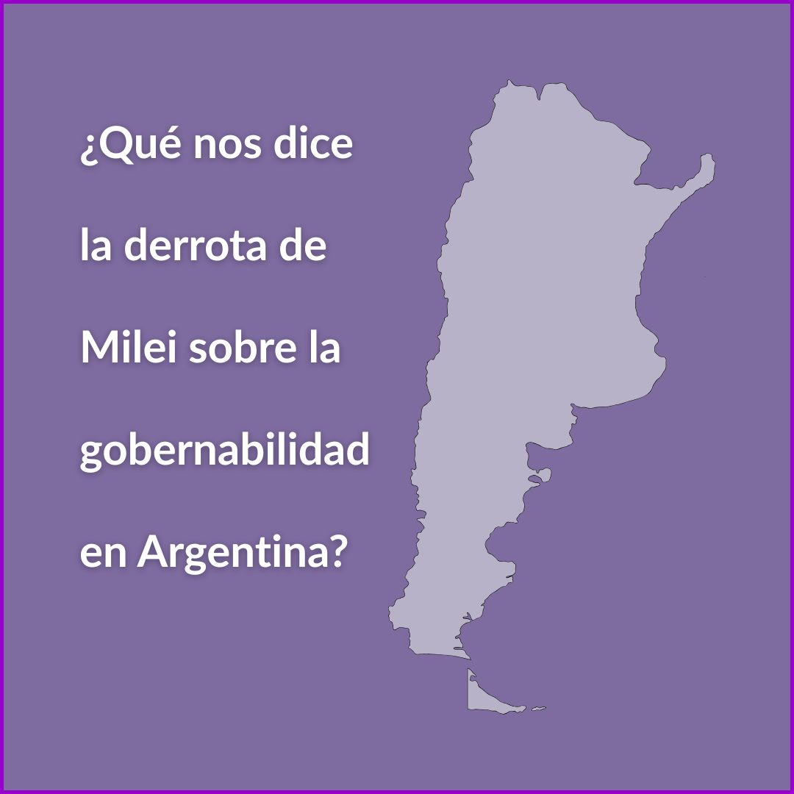
La gestión pública no se mide solo en términos de eficiencia o recorte del gasto. Se mide en legitimidad, en gobernabilidad y en la capacidad del Estado de sostener un rumbo en medio de la incertidumbre. Neuquén, con sus avances en planificación, regionalización y gestión por resultados, encarna hoy un modelo de gobernanza territorial sólido. En cambio, Javier Milei, tras el golpe electoral del 7 de septiembre, enfrenta una crisis que va más allá de lo legislativo: es una crisis de legitimidad que amenaza con vaciar de poder a su gobierno.
Leer más...
Legitimidad en caída: el costo de gobernar sin consensos
La derrota en la provincia de Buenos Aires —47 % a 34 % contra la oposición
peronista— no solo evidencia un traspié electoral: marca el inicio de un ciclo de pérdida de autoridad política. La gobernabilidad se resiente
cuando un presidente carece de mayoría legislativa, enfrenta a gobernadores hostiles y ve resquebrajarse su relato refundacional.
Peter Evans lo advertía: la efectividad estatal depende de la capacidad de hibridar burocracia, mercado y democracia. Milei ha privilegiado
al mercado y despreciado las otras dimensiones. El resultado: pérdida de apoyo social y aislamiento institucional.
Gobernabilidad: de la imposición al bloqueo
El Senado argentino ya dio un golpe institucional contundente al revertir el veto
presidencial sobre ayudas a las personas con discapacidad: 63 votos contra su imposición. Este episodio desnuda el futuro inmediato: un
Congreso dispuesto a bloquear, un Ejecutivo debilitado y un capital político en descenso.
Como advierte Guillermo Fuentes, “el paradigma jerárquico-burocrático se volvió insuficiente para dar respuesta a sociedades más complejas”.
Pero el “paradigma de choque” de Milei, que margina al Congreso y desprecia el diálogo, resulta aún más insuficiente: erosiona la legitimidad
y deja a la gobernabilidad pendiendo de un hilo.
Neuquén: un contraste de institucionalidad y gobernanza
Mientras Milei se encierra en un modelo personalista, Neuquén avanza con una lógica diferente:
1. Regionalización del gasto, que acerca las decisiones al territorio.
2. Programas interministeriales, que abordan problemáticas complejas como la salud mental desde una perspectiva de gestión por
resultados.
3. Participación ciudadana creciente, que legitima las decisiones y fortalece el contrato social.
Neuquén aplica, en los hechos, lo que Evans llamó estrategias híbridas: capacidad burocrática profesional, lectura de señales del mercado y
legitimidad democrática. Esa fórmula, que el gobierno nacional ignora, es la que garantiza gobernabilidad real en el tiempo.
Proyección a futuro: entre erosión y construcción
La legitimidad es la fuente primera del poder político. Sin ella, la gobernabilidad se reduce a un ejercicio de resistencia y aislamiento.
Milei, tras su derrota, enfrenta el riesgo de convertirse en un presidente formal, pero sin capacidad efectiva de conducir el rumbo del país.
Neuquén, en cambio, muestra que la gobernabilidad se construye desde la solidez institucional, la articulación intersectorial y la orientación
al ciudadano. En tiempos donde el país se tambalea entre mercados volátiles y liderazgos que se desgastan rápidamente, Neuquén ofrece un
mensaje claro: la legitimidad no se decreta, se construye.
La derrota de Milei no es solo una anécdota electoral. Es un síntoma de un modelo de gestión que, al despreciar la democracia y la
institucionalidad, pierde legitimidad y compromete su propia gobernabilidad. En contraste, Neuquén demuestra que la verdadera modernización
del Estado no se mide en cuánto se recorta, sino en cuánta legitimidad se gana para gobernar el futuro.
Reflexión final
La pregunta no es solo si Milei podrá sostener la gobernabilidad tras su derrota electoral. La pregunta es más profunda: ¿qué modelo de Estado
queremos construir? Uno que se refugia en dogmas de mercado, aislado y sin legitimidad social, o uno que, como Neuquén, apuesta a la
institucionalidad, la planificación y la participación ciudadana.
Milei enfrenta un futuro de poder erosionado, gobernando contra todos y con legitimidad decreciente. Neuquén, en cambio, demuestra que la
fortaleza del Estado no radica en gritar más fuerte, sino en construir consensos, articular políticas y sostener la confianza ciudadana.
En definitiva, la historia enseña que los liderazgos personalistas se consumen rápido, mientras que las instituciones sólidas perduran. Y en
esa diferencia se juega no solo el presente, sino el futuro político de la Argentina.
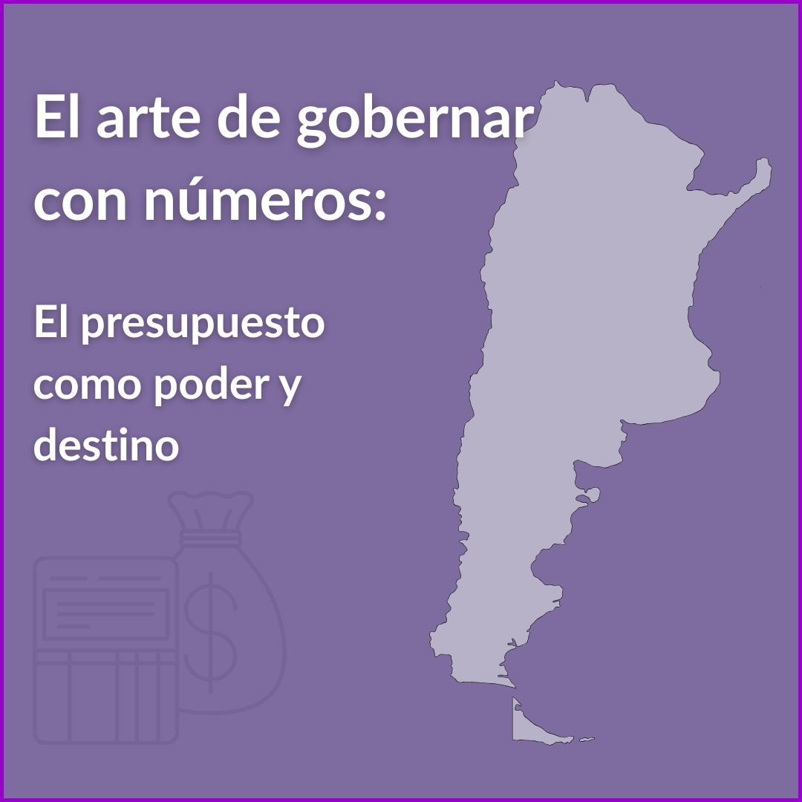
Decía Aristóteles que “la política es el arte de lo posible”. Y si hay un instrumento que define lo posible en la acción de gobierno, ese es el presupuesto público. No es un simple registro contable: es la materialización de la voluntad política en cifras. Allí se expresa, con la fuerza de la técnica y la economía, la dirección de un proyecto de país.
El presupuesto es, en términos modernos, la brújula del Estado. Define hacia dónde se orientan los recursos, qué se prioriza, qué se posterga y qué se sacrifica. Y como señala la Ley 24.156, es un instrumento de planificación, de política económica y social, de administración y de control. En otras palabras: el presupuesto es gobierno.
Leer más...Ahora bien, en tiempos de incertidumbre, cuando se prorroga un presupuesto en lugar de diseñar uno nuevo, entramos en un terreno donde la técnica cede ante la política. Lo que en teoría debería ser un proceso de asignación racional de recursos para producir bienes, resultados e impactos sociales, se convierte en un mecanismo de poder concentrado y discrecionalidad ejecutiva.
Aquí entra en juego Maquiavelo: el príncipe moderno no solo gobierna con la espada de las decisiones, sino con la pluma que define cuánto y a quién se destina. La prórroga presupuestaria, al evitar la negociación parlamentaria, fortalece al Ejecutivo en su capacidad de decidir unilateralmente. Pero también erosiona la base de consenso que sostiene la legitimidad de cualquier poder duradero. Porque, como advertía el propio Maquiavelo, el arte de gobernar no está en vencer coyunturas, sino en construir estabilidad en el tiempo.
La decisión del presidente Javier Milei de gobernar con presupuestos prorrogados desde que asumió no es neutra:
1. Políticamente, expresa una estrategia de aislamiento deliberado del Congreso.
2. Administrativamente, congela prioridades en un contexto inflacionario y cambiante.
3. Socialmente, se traduce en un ajuste real sobre programas esenciales, con impactos regresivos en salud, educación y políticas sociales.
Desde la perspectiva filosófica, podemos preguntarnos con Weber: ¿es esta la “ética de la convicción” (cumplir con la promesa de ajuste sin concesiones) o la “ética de la responsabilidad” (gobernar considerando las consecuencias sociales de las decisiones)? El presupuesto, en este caso, se transforma en la arena donde chocan esas dos éticas.
La teoría del Presupuesto por Programas nos enseña que los recursos deben vincularse con productos, resultados e impactos. Pero cuando se gobierna sin un presupuesto propio, se rompe esa lógica de planificación y evaluación. Lo que queda no es una política pública orientada a resultados, sino una administración del presente que posterga el futuro.
En definitiva, el presupuesto es el verdadero “contrato social” del Estado moderno. Y como bien enseñaba Aristóteles, “el fin de la política es el bien común”. Sin un presupuesto debatido, aprobado y orientado a resultados, no hay bien común posible, solo voluntad de poder.
El desafío no es técnico, es filosófico y político: recuperar el presupuesto como acto soberano de construcción colectiva, como espacio de consenso, como herramienta de transformación. Porque sin presupuesto no hay proyecto. Y sin proyecto, no hay destino.
En un contexto de recursos escasos y demandas crecientes, gobernar sin vincular el presupuesto a los resultados reales de las
políticas públicas es una irresponsabilidad técnica y política. Como plantea Oszlak (2021), los Estados contemporáneos enfrentan la
necesidad de adoptar sistemas de gobernanza más inteligentes, basados en evidencia, datos abiertos y algoritmos que apoyen decisiones
oportunas.
Hoy, la inteligencia artificial (IA) no es una moda ni un lujo: es una herramienta estratégica para que cada peso invertido por el Estado
tenga sentido, dirección y efecto.
En la Provincia del Neuquén, donde conviven desafíos sociales complejos y una fuerte impronta planificadora, la IA puede jugar un rol clave en conectar el presupuesto con los planes provinciales e institucionales, optimizando el gasto público y fortaleciendo la transparencia. Según Pignarre y Stengers (2019), el problema no es solo la eficiencia de los recursos, sino la capacidad del Estado de sostener procesos colectivos de transformación, algo que la IA, bien orientada, puede potenciar en clave democrática. Un ejemplo concreto: desde la Secretaría de Deportes de Neuquén, se podría aplicar IA para analizar datos históricos de participación deportiva por territorio, evaluar impactos sanitarios vinculados a la actividad física, y proyectar demandas futuras de infraestructura o programas según grupos etarios, climáticos o socioculturales. Esto permitiría no solo diseñar mejores políticas deportivas, sino también alinearlas al Plan Provincial de Salud 2024–2027, a los Objetivos de Desarrollo Sostenible (especialmente el ODS 3 y ODS 5) y al Presupuesto por Resultados del Programa 74, que ya trabaja con un enfoque orientado a la equidad territorial.
De esta forma, un programa deportivo deja de ser una actividad aislada y pasa a formar parte de una estrategia integral de salud pública, inclusión y prevención. Además, como sostiene Aguilar Villanueva (2012), las buenas políticas públicas no son solo las que resuelven problemas, sino aquellas que están sustentadas en procesos legítimos de formulación, monitoreo y evaluación. La IA, en este sentido, puede contribuir a consolidar un sistema de monitoreo transversal que actúe como faro estratégico para toda la administración pública neuquina.
Esto implica crear una Unidad Provincial de Inteligencia Presupuestaria con capacidad analítica, prospectiva y territorial, que colabore con cada ministerio y secretaría para vincular sus presupuestos con los planes institucionales. Neuquén tiene una oportunidad única: ser la primera provincia del país que gobierna con algoritmos al servicio del bien común, con datos abiertos, inteligencia artificial y presupuesto con sentido. No se trata de robotizar la política, sino de humanizarla con decisiones más inteligentes, más transparentes y más justas.
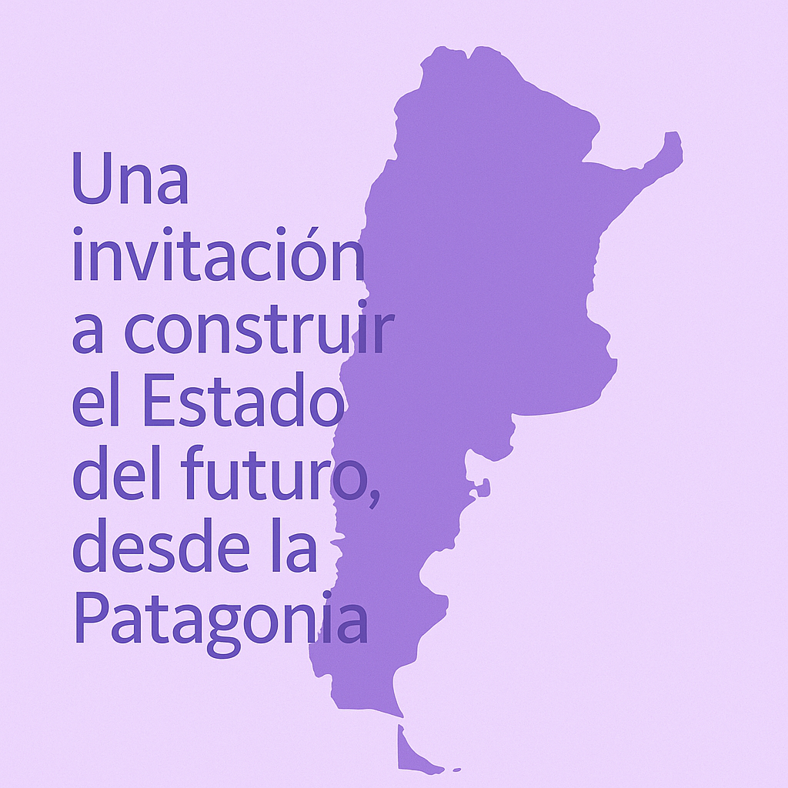
En tiempos donde la Argentina debate el tamaño del Estado, Neuquén tiene la posibilidad —y la responsabilidad— de cambiar la
pregunta: no cuánto Estado, sino qué Estado. No es menor. Porque mientras en el país se discute la supervivencia del Estado como herramienta,
aquí podemos enfocarnos en su transformación estratégica..
Nuestra provincia no es sólo una excepción en la cartografía nacional: es una oportunidad concreta de mostrar que un Estado moderno,
transparente y eficiente es posible. No porque lo digamos: porque podemos medirlo.
Hoy, la diferencia no la hace quien más promete, sino quien más demuestra. En Neuquén, contamos con una administración pública profesionalizada, con áreas técnicas fortalecidas, procesos presupuestarios previsibles y equipos comprometidos. Pero ese capital institucional necesita un paso decisivo: la institucionalización del monitoreo y evaluación de políticas públicas como política de Estado.
No hablo de burocracia ni de control punitivo. Hablo de gestión inteligente. De gobiernos que no deciden en base a la urgencia del día a día, sino en función de indicadores claros, objetivos estratégicos definidos y resultados verificables. Lo que autores como Kusek y Rist definieron hace años como “gestión para resultados” hoy puede hacerse realidad aquí. No como discurso, sino como práctica.
Evaluar no es auditar: es gobernar con evidencia en tiempo real. Significa tener tableros de control donde las decisiones se respalden en datos concretos. Significa priorizar recursos no por tradición, sino por impacto. Y significa, sobre todo, construir un Estado del futuro que sea medible, auditable y perfectible. Un Estado que funcione.
Neuquén no necesita adaptarse a las recetas nacionales: puede liderar. Puede mostrar al país que es posible administrar de manera eficiente sin renunciar a la equidad. Que es posible gastar mejor, no sólo menos.
No hablo de un sueño utópico. Hablo de un proyecto técnico, concreto y ejecutable, que ya estudie, escribí y repensé:
• Crear la Secretaría Provincial de Evaluación y Monitoreo de Políticas Públicas.
• Diseñar un Sistema Integrado de Indicadores Públicos que permita monitorear y transparentar la gestión.
• Aplicar el presupuesto espejo en programas interministeriales estratégicos, priorizando el enfoque de resultados.
• Fortalecer la capacitación del recurso humano estatal, para garantizar que la evaluación sea un ejercicio interno y continuo.
En tiempos donde la política nacional se encapsula en el corto plazo, Neuquén puede diferenciarse planificando el largo. Puede transformarse en la provincia del dato, la evidencia y la eficiencia pública.
Lo que Neuquén haga en los próximos dos años no será sólo gestión: será legado. Gobernar es decidir. Y hoy, decidir es evaluar.
Gobernar con evidencia: la oportunidad estratégica de Neuquén en tiempos de incertidumbre.
Por Sabrina Cecilia Serer
En un país donde la política parece girar entre el ajuste y la improvisación, defender una forma de gobernar basada en la evidencia,
la planificación y la evaluación puede parecer un acto contracultural. Pero en la provincia del Neuquén —con su historia, su presente y sus
posibilidades— esa opción no solo es viable: es urgente.
Una Nación sin brújula: recorte sin evidencia, retroceso sin rumbo. El gobierno nacional actual, liderado por Javier Milei, ha propuesto un rediseño profundo del Estado, con un enfoque liberal radical que prioriza la reducción del gasto, la eliminación de estructuras y la desregulación extrema. Sin embargo, lo hace sin métricas, sin diagnósticos públicos, sin evaluar qué funciona y qué no. No hay sistema nacional de monitoreo ni evaluación que respalde las decisiones que hoy impactan sobre la salud, la educación o la protección social. Se prescinde de la política pública como herramienta de desarrollo y se la reemplaza por el mercado o por la nada.
Esta ausencia de evaluación genera efectos graves:
• Se eliminan programas sin saber a quiénes afectan.
• Se fragmentan políticas sociales sin medir impactos.
• Se desconectan presupuesto, resultados e impacto territorial.
La política nacional se torna reactiva, ideológica, desconectada de las condiciones reales de vida de millones de argentinos.
Neuquén: un modelo alternativo basado en planificación, evidencia y cercanía territorial
Frente a ese escenario, el gobierno de Rolando Figueroa marca una diferencia clara. Desde su asunción, ha tomado decisiones estratégicas con
tres características fundamentales:
1. Reordenamiento administrativo con foco en resultados.
2. Descentralización territorial del presupuesto.
3. Inicio de procesos de monitoreo y evaluación de políticas sociales y sanitarias.
No se trata solo de gestionar. Se trata de construir un nuevo contrato político con la ciudadanía, que recupere la confianza en el Estado mediante una
gestión transparente, eficiente y abierta al aprendizaje.
Desde los distintos ministerios se comenzó a trabajar en diagnósticos institucionales, relevamientos de información real y alianzas con actores académicos
como la Universidad Nacional del Comahue. Todo ello con un propósito claro: sentar las bases de un sistema de monitoreo y evaluación provincial, con foco
en los resultados y la equidad territorial.
Chile como faro: un sistema de evaluación con impacto real
Desde los años 90, Chile ha construido uno de los sistemas más sólidos de América Latina en materia de evaluación. A través de la Dirección
de Presupuestos (DIPRES), evalúa sistemáticamente sus programas públicos, vincula los resultados al presupuesto anual y genera reportes
públicos que son utilizados por el Congreso y la ciudadanía.
Algunos logros del modelo chileno:
• Eliminación de programas ineficientes con base técnica.
• Rediseño de políticas con base en evaluación de desempeño.
• Legitimidad social y técnica del gasto público.
• Incorporación de universidades y centros independientes en los procesos.
Este sistema no fue creado de un día para otro, sino que fue consolidado con liderazgo político, voluntad institucional y una cultura de
aprendizaje. Hoy es una referencia global.
Conclusión: gobernar con datos, decidir con justicia
En tiempos de recortes a ciegas y desinformación programada, contar con evidencia no es un lujo: es una necesidad. Neuquén tiene la
posibilidad de convertirse en la primera provincia del país en institucionalizar un sistema moderno de evaluación y monitoreo de políticas
públicas, anclado en resultados, en datos reales y en justicia territorial.
El gobierno de Figueroa tiene la oportunidad de marcar un rumbo distinto. No para confrontar con la Nación, sino para mostrar que otra forma
de hacer política es posible. Que se puede decidir mejor, gastar con sentido y transformar la realidad desde la evidencia.
Porque evaluar no es auditar: es gobernar con inteligencia. Y cuando eso se hace desde el territorio, con liderazgo y con estrategia, lo
público deja de ser promesa y se convierte en presente.
En una Argentina cruzada por la fragmentación, el miedo y el discurso del odio al Estado, la provincia del Neuquén emerge como una
referencia nacional de gobernanza responsable, moderna y humana.
Mientras el gobierno nacional liderado por Javier Milei se empeña en destruir las capacidades institucionales que sostienen la democracia,
el gobernador Rolando Figueroa está demostrando que es posible gobernar con austeridad sin vaciar el Estado, con firmeza sin autoritarismo,
y con innovación sin desmantelamiento.
Hoy más que nunca, la política argentina necesita mirar hacia Neuquén. No como un rincón aislado, sino como una usina de ideas, prácticas y convicciones que pueden renovar el federalismo argentino con visión de futuro.
📌 Figueroa: gobernanza real en tiempos de simulacro Rolando Figueroa gobierna desde una lógica de articulación, no de imposición. Construye con intendentes, escucha a las comunidades, respeta al personal técnico y jerarquiza la palabra de sus equipos. Esa es la gobernanza real, la que describe Renate Mayntz cuando habla de “coordinación efectiva entre actores diversos”. No hace marketing de la antipolítica: hace política en serio.
El gobernador entiende que la legitimidad no se compra con clics ni con cadenas de odio, sino que se construye día a día, con decisiones que hacen posible la vida de la gente: desde un hospital que funciona, hasta un maestro que cobra en tiempo y forma, pasando por un equipo técnico que planifica y ejecuta sin improvisaciones.
🧱 Capacidad estatal con rostro humano Según Julián Bertranou, la capacidad estatal se mide en dos dimensiones: organizacional y política. Neuquén está avanzando en ambas. Figueroa está ordenando la administración, profesionalizando el empleo público, reduciendo gastos innecesarios sin dañar derechos. Pero so bre todo, está logrando algo que muy pocos logran: generar confianza en el aparato estatal.
Y esa confianza no se decreta ni se terceriza. Se cultiva con políticas públicas diseñadas con datos, con mirada territorial y con respeto por la ciudadanía.
🌍 Un Estado neoweberiano en acción El modelo de Figueroa se parece mucho al Estado neoweberiano que describe Damien Larrouqué: combina el orden institucional y la legalidad con la agilidad, la innovación y la orientación a resultados. No es un Estado paralizado ni capturado, pero tampoco es un Estado sin alma.
Es un Estado que no se arrodilla ante el mercado, pero tampoco se encierra en sí mismo. Es un Estado que habla con voz firme, que regula con criterio, y que se atreve a innovar sin perder el norte ético.
🧑🏫 La función pública es el músculo del gobierno A contramano del relato nacional que desprecia a los y las trabajadoras del Estado, Neuquén reconoce que sin ellas no hay política pública posible. Nuestros equipos técnicos, nuestros agentes sanitarios, nuestros administrativos, nuestras docentes y planificadoras no son “carga pública”: son soporte vital del Estado neuquino.
La Carta Iberoamericana de la Función Pública lo dice con claridad: sin mérito, sin estabilidad y sin compromiso, no hay gobierno que funcione. Y en Neuquén la política se ejerce con las personas, no contra ellas.
📡 Innovación sin vacío: datos, participación y digitalización inteligente La modernización del Estado no es solo una consigna en los discursos del gobierno provincial: es una política en marcha. Desde la mejora en los sistemas de gestión, hasta el impulso incipiente a la apertura de datos, pasando por el diálogo interministerial y territorial, Neuquén está construyendo una Administración pública inteligente, como la que plantea Carles Ramió: sólida y ágil, predecible pero abierta, legalista pero creativa.
📣 Llamado a la acción: ¡Miren a Neuquén! El Estado nacional hoy representa un proyecto destructivo, sin ética pública ni horizonte institucional. Pero en el sur, una provincia está sembrando otra posibilidad. Y no es casualidad: es liderazgo, es equipo, es visión.
Por eso convoco a quienes construyen política en todo el país —funcionarios, legisladores, intendentes, trabajadores estatales, referentes sociales— a mirar a Neuquén no como excepción, sino como ejemplo.
👉 Porque el Estado no es el problema, sino la condición para resolverlos.
👉 Porque la función pública no es enemiga, sino herramienta de equidad.
👉 Porque la democracia no se defiende sola: se gobierna bien, o se pierde.
Neuquén está demostrando que es posible. Y lo está haciendo con política de verdad. Que nadie mire para otro lado.
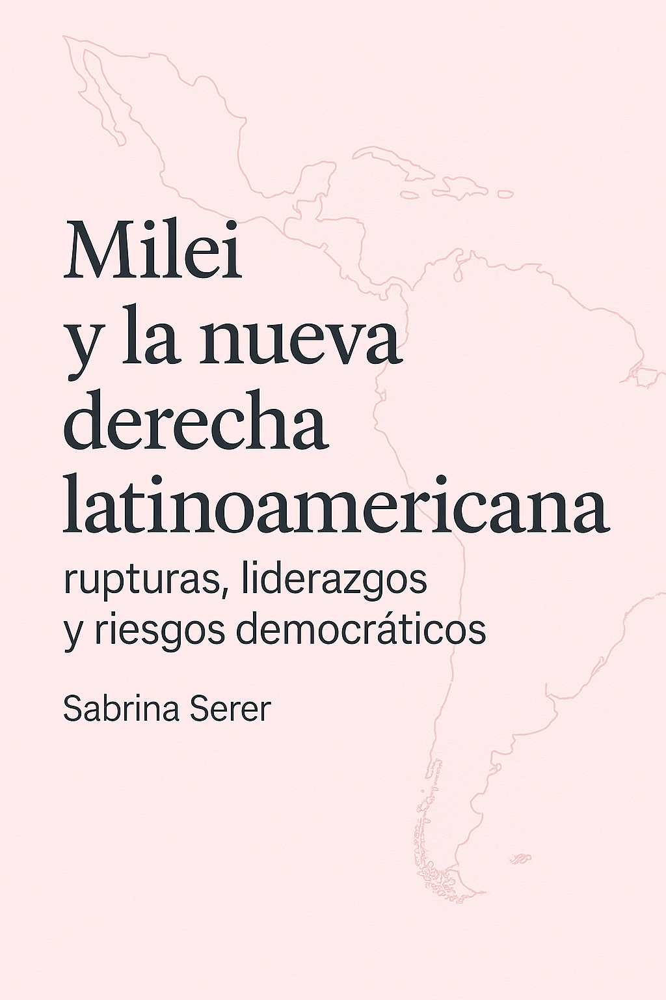
🖋️ Lo escribí con el objetivo de abrir preguntas, invitar a la reflexión colectiva y seguir fortaleciendo los espacios de pensamiento
crítico.
👉 Además, te invito a aprovechar la descarga gratuita del libro “Diseño y Monitoreo de las políticas públicas”, disponible en el siguiente link: www.sabrinaserer.ar/libro
📥 Leelo, compartilo, discutilo y sumate a la conversación.
Milei y la nueva derecha latinoamericana: rupturas, liderazgos y riesgos democráticos
La llegada de Javier Milei al poder en Argentina no es un hecho aislado. Es parte de un fenómeno regional más amplio: el ascenso de liderazgos de derecha radical en América Latina que combinan discursos antipolíticos, pulsiones autoritarias y una promesa de “restauración” frente a un orden político considerado agotado. Sin embargo, el caso argentino tiene matices propios que lo hacen especialmente revelador para pensar los desafíos que enfrenta la democracia en la región.
A diferencia de Bolsonaro en Brasil o de Bukele en El Salvador —dos figuras que también capitalizaron el descontento social desde posiciones de derecha—, Milei no emergió desde las Fuerzas Armadas ni desde estructuras partidarias tradicionales, sino desde un discurso de liberalismo extremo, fuertemente centrado en la deslegitimación del Estado. Su narrativa se ancla en una crítica radical a la “casta política” y en una exaltación del mercado como única solución a los problemas nacionales. Pero su ejercicio del poder no ha sido coherente con esa retórica liberal: desde el inicio de su mandato, ha acumulado poder por vía excepcional (decretos, emergencia económica, ofensivas contra el Congreso) y ha promovido una concentración de atribuciones que contrasta con su discurso privatizador y antiestatista.
En términos comparativos, el gobierno de Milei comparte con Bolsonaro y Bukele una lógica de polarización permanente. Todos ellos han construido su legitimidad sobre la base de una figura fuerte, que dice encarnar al “pueblo verdadero” y que desconfía abiertamente de las instituciones representativas. También han recurrido a estrategias similares: uso intensivo de redes sociales para desintermediar la comunicación, ataques a medios críticos, judicialización del conflicto político y creación de enemigos internos (la “casta”, el progresismo, el feminismo, el ambientalismo).
El caso de Keiko Fujimori en Perú, aunque diferente en su acceso al poder, también permite trazar paralelismos. Su liderazgo reivindica una tradición autoritaria (el fujimorismo original), aunque operando más dentro de los márgenes del sistema institucional. La diferencia radica en que mientras Fujimori intenta conquistar el poder desde la competencia política tradicional, figuras como Milei lo hacen desde la promesa de “destruir el sistema desde adentro”.
La característica común de estos liderazgos es que, más que proponer un modelo de sociedad, encarnan una voluntad de ruptura. Su legitimidad se construye desde la negación: del pasado, de la política, del pluralismo. En el caso argentino, este modelo de derecha radical se superpone con una crisis estructural del Estado y del contrato social, lo que agrava los efectos de cada decisión política. La desregulación, el desfinanciamiento del sector público y el conflicto permanente con actores sociales —desde universidades hasta sindicatos y gobernadores— dibujan un escenario de gobernabilidad frágil y de institucionalidad en tensión.
En este contexto, el caso de Bolivia funciona como contrapunto: allí, la crisis se da dentro de un partido que alguna vez fue hegemónico (el MAS), y que hoy enfrenta una fragmentación interna que pone en jaque su continuidad. A diferencia de Argentina, donde el liderazgo emergente busca romper con todo lo previo, en Bolivia la disputa es por la herencia del pasado reciente. Pero en ambos casos, el resultado es similar: sistemas políticos debilitados, representación cuestionada y escenarios electorales abiertos.
América Latina está atravesada por una reconfiguración de sus liderazgos, de sus partidos y, sobre todo, de sus formas de representación. El caso Milei debe ser leído como síntoma y advertencia: cuando los partidos tradicionales no logran canalizar el malestar social, surgen liderazgos que prometen orden y libertad, pero que terminan erosionando las bases mismas de la democracia. Frente a eso, el desafío no es solo resistir, sino también construir alternativas capaces de combinar eficacia, legitimidad y justicia social.
La publicación del libro “Diseño y Monitoreo de Políticas Públicas” sigue generando encuentros y reflexiones profundas en quienes
trabajamos para fortalecer la gestión pública. Esta semana, recibí con enorme gratitud las palabras de Marcos Makón, especialista de
referencia y actual director de la Especialización en gestión para resultados de la UBA, que tengo el honor de estar cursando:
🗣️ “Refleja un sólido proceso de investigación, de recopilación de antecedentes y de tratamiento de temas centrales para el funcionamiento de la administración pública. Felicitaciones por el trabajo realizado.”
💜 Estas palabras no solo me emocionan, sino que confirman la importancia de escribir, sistematizar y compartir experiencias desde lo público. La formación constante es clave para construir una administración estatal profesional, transparente y con capacidad transformadora.
📚 Si todavía no lo leíste, el libro está disponible de forma gratuita en este link 👉 www.sabrinaserer.ar/libro
Desde que comencé a estudiar el fenómeno del impeachment en el contexto latinoamericano, me encontré con una realidad compleja y
profundamente política. Este procedimiento, que muchas veces se traduce como juicio político, no es simplemente una herramienta
jurídica para destituir a presidentes corruptos o ineficaces. Es, ante todo, un instrumento maleable que responde a crisis, escándalos,
relaciones de poder y alianzas parlamentarias.
En este informe, que surge como parte del proceso formativo del Máster en Análisis de Políticas Públicas, analizo el impeachment como
fenómeno latinoamericano contemporáneo. A partir de los aportes de autores como Aníbal Pérez Liñán y de un análisis comparado de escenarios
recientes en Argentina, Guatemala, Ecuador, Panamá, República Dominicana y México, busco responder una pregunta fundamental:
¿qué tan viable es gobernar sin mayoría legislativa en América Latina?
Los casos que revisé muestran distintos grados de vulnerabilidad. Mientras Javier Milei en Argentina gobierna con el menor apoyo parlamentario de la historia reciente, Claudia Sheinbaum en México cuenta con una mayoría calificada que le permite avanzar con reformas constitucionales. En el medio, hay matices: presidentes que negocian, que pactan o que enfrentan bloqueos constantes. Esta diversidad de scenarios pone en evidencia cómo la fragmentación política, el voto castigo y la hiperpolarización configuran hoy el terreno de juego de nuestras democracias.
Desde el punto de vista institucional, el impeachment aparece como una amenaza latente para los ejecutivos sin respaldo legislativo sólido. Aún cuando haya evidencia de corrupción o escándalos, el destino de un presidente depende de la capacidad de su coalición de sostenerlo, al menos parcialmente. Por eso, la construcción de gobernabilidad se vuelve una tarea estratégica y dinámica, que exige alianzas, gestión de imagen pública y mucha habilidad para navegar en contextos de alta volatilidad política.
Los invito a descargar este informe completo desde mi web. Creo que, más allá del análisis académico, es una herramienta útil para reflexionar sobre el rumbo de nuestras democracias. Y, sobre todo, para entender que la política no se juega solo en las urnas, sino en la arena compleja de las instituciones, los partidos y la opinión pública.
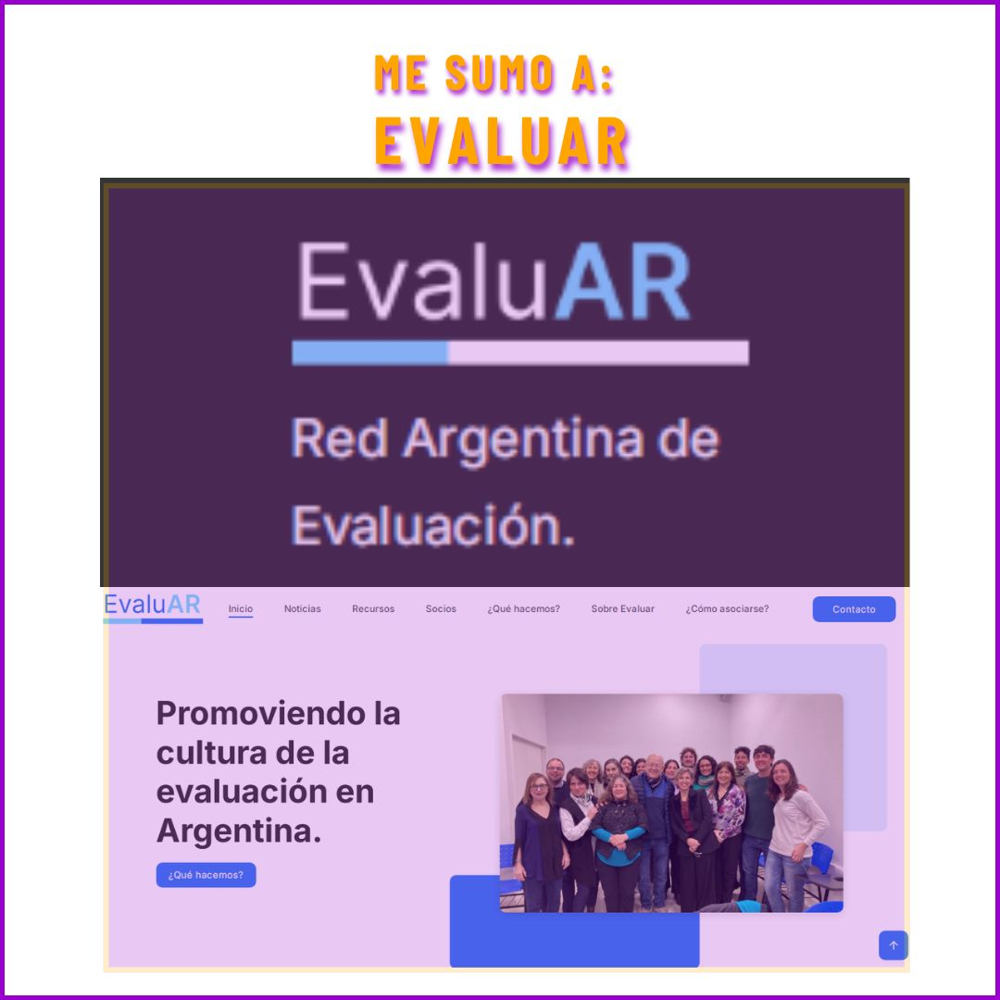
Estoy feliz de anunciar que me he sumado a EVALUAR, una ONG argentina que trabaja incansablemente para mejorar la calidad de las
políticas públicas y programas sociales a través de la evaluación rigurosa y el uso de evidencia. Ser parte de este equipo es un
honor y una gran responsabilidad, ya que compartimos la visión de un país más justo, eficiente y desarrollado. 💪🇦🇷
EVALUAR se dedica a analizar el impacto de las intervenciones públicas y privadas, promoviendo la toma de decisiones basada en datos concretos. Su trabajo no solo contribuye a optimizar recursos, sino también a garantizar que las políticas lleguen de manera efectiva a quienes más lo necesitan. Esta misión es fundamental para construir una sociedad más equitativa y sostenible. 📊✨
Uno de los pilares de EVALUAR es fomentar la cultura evaluativa, es decir, impulsar la importancia de medir y analizar los resultados de las acciones que se llevan adelante. Esto no solo mejora la gestión pública, sino que también fortalece la confianza ciudadana en las instituciones. Como parte de este equipo, me comprometo a aportar mi granito de arena para seguir promoviendo estos valores. 🌱💡
Además, EVALUAR no solo realiza investigaciones, sino que también capacita a organizaciones y actores clave en metodologías de evaluación. Este enfoque integral permite que más personas e instituciones se sumen a esta causa, multiplicando el impacto positivo en nuestra sociedad. 🎓🤝
Estoy emocionada de ser parte de esta iniciativa y de colaborar en la construcción de un futuro mejor para todos los argentinos. Juntos, seguiremos trabajando por la excelencia y el desarrollo de nuestro país. ¡Gracias, EVALUAR, por permitirme ser parte de este gran proyecto! 🙏✨
#Evaluar #PolíticasPúblicas #DesarrolloSocial #SabrinaSerer #Argentina #GpR
En el marco del Seminario “Planificación y Dirección Estratégica. Gestión por Resultados” de la Universidad Nacional del
Comahue (UNCo), abordamos herramientas fundamentales para mejorar la planificación y la gestión en salud.
📌 Planificación y Evaluación en la Gestión Pública En este espacio trabajamos sobre cómo diseñar e implementar planes estratégicos efectivos, incorporando herramientas de evaluación que permitan medir el impacto de las decisiones en el ámbito sanitario. La gestión basada en evidencia es clave para optimizar recursos y mejorar los resultados en salud.
📌 Implementación de la Gestión por Resultados (GpR) Aquí profundizamos en la ejecución y monitoreo de estrategias en salud, con un enfoque práctico en la toma de decisiones basada en datos, el control de gestión y la mejora continua. Analizamos casos reales y metodologías que facilitan la implementación de políticas públicas más eficientes.
Además, quiero invitarlos a conocer la nueva carrera de posgrado “Especialización en Gestión y Dirección de Instituciones de Salud”, que se dictará desde la Facultad de Ciencias Médicas de la UNCo. Esta especialización, dirigida por el Mg. Martín Regueiro, busca fortalecer la formación de profesionales en la gestión del sistema de salud, brindando herramientas clave para la toma de decisiones estratégicas y la dirección eficiente de instituciones sanitarias.
Este seminario y la nueva especialización están dirigidos a profesionales de la salud, administradores y responsables de políticas públicas que buscan fortalecer sus capacidades en planificación y gestión. ¡Los invito a sumarse a esta propuesta de formación en la UNCo y a seguir construyendo juntos un sistema de salud más eficiente y equitativo! ¡Los espero!
El objetivo principal del presente trabajo es resaltar; mediante el relevamiento y análisis parcial de las políticas públicas
actuales; la necesidad de diseñar políticas públicas transversales de primera infancia con un enfoque sistémico comprensivo y desarrollar
un modelo de gestión orientado a resultados, para garantizar la eficiencia del gasto público en la administración pública provincial.
Los objetivos específicos que se desarrollaron en el presente trabajo, son los siguientes: Relevar y analizar información de las políticas públicas de primera infancia, para sensibilizar y poner en conocimiento a los tomadores de decisión, sobre la necesidad de elaborar en forma coordinada e integrada políticas públicas transversales, que se visibilicen en un presupuesto provincial orientado a resultados. Sensibilizar y dar a conocer a los mandos medios y operativos de la provincia, acerca de la responsabilidad con respecto a la implementación, monitoreo y evaluación de las políticas públicas de primera infancia orientadas a resultados diseñadas transversalmente.
Fortalecer las capacidades institucionales provinciales para el diseño estratégico de políticas públicas con un enfoque sistémico comprensivo de primera infancia orientadas a resultados. Promover la capacitación sobre la reingeniería de los procesos para el logro efectivo de la implementación de políticas públicas transversales de primera infancia en la provincia de Neuquén. Sensibilizar a los funcionarios públicos de la provincia acerca de las ventajas que brinda la capacitación referida a la elaboración del presupuesto provincial orientado a resultados destacando la viabilidad de una nueva forma de presupuestar enfocada en los principios de eficacia, eficiencia, efectividad y calidad del gasto público.
Pensarnos como ciudadanos a 10, 15 o 20 años puede parecer casi imposible, especialmente si consideramos el contexto en el que
vivimos como argentinos/as. Somos un ejemplo claro de capacidad de adaptación y superación. Sin embargo, contamos con herramientas técnicas y
políticas que podrían ayudarnos a reducir la incertidumbre socioeconómica.
La planificación estratégica es esencial para trazar una hoja de ruta desde una perspectiva técnica y política. Además, la gestión presupuestaria y financiera es el motor que convierte esas ideas en acción. Por eso, al planificar, no solo debemos enfocarnos en las acciones a ejecutar, sino también en los insumos necesarios (bienes de consumo, de capital y servicios) para concretar el plan. De otro modo, la planificación por sí sola se convierte en una simple “expresión de deseo”. Por lo tanto, es crucial fortalecer el trabajo en equipo dentro de los ministerios, ya que la desconexión entre la planificación y las necesidades presupuestarias sigue siendo un desafío importante.
Transformar la cultura institucional en torno al presupuesto es indispensable para que los resultados se materialicen y respondan a las metas trazadas. Mi propósito principal es fortalecer la colaboración interdisciplinaria entre quienes planifican y quienes gestionan los recursos administrativos, trabajando juntos para lograr previsibilidad y eficiencia en el uso de los recursos provinciales.
Este trabajo demanda profesionales formados/as en múltiples áreas, pero, sobre todo, con habilidades como empatía, escucha activa, experiencia y criterio para desarrollar herramientas técnicas presupuestarias que sean amigables y fáciles de aplicar. Formarnos en habilidades blandas como profesionales de Ciencias Económicas es el desafío que debemos asumir. Así podremos crear herramientas flexibles y adaptadas a las necesidades específicas de cada ministerio. Para ello, es fundamental salir de los escritorios y realizar diagnósticos que reflejen las realidades regionales.
La planificación estratégica también es la base para diseñar un sistema de seguimiento y monitoreo de políticas públicas. Este debe incluir indicadores y metas que permitan evaluar tanto la planificación en territorio como los aspectos presupuestarios, asegurando que los bienes y servicios generados por los programas sean eficientes y optimicen los recursos públicos. Además, el monitoreo de las políticas públicas nos da la posibilidad de medir resultados, identificar desvíos y mejorar continuamente los procesos y el plan de acción.
Estoy convencida de que el rol del profesional en Ciencias Económicas es clave para alcanzar los objetivos esperados y aportar valor público en la implementación de políticas públicas. Ya no somos solo generadores de datos duros: somos actores fundamentales para que los resultados se materialicen en los distintos ministerios. Nuestra responsabilidad es ofrecer herramientas que aporten previsibilidad al gasto y hagan un uso eficiente de los recursos públicos, con una visión integral y comprensiva del contexto ministerial al que pertenecemos.
Empezá el año con todo y tu presupuesto alineado! 💸✨
3️⃣ Hacelo equitativo: Planificá pensando en todos. . 🏡💞 Invertí en formación para mejorar la calidad del servicio y fomentar un ambiente
laboral inclusivo.
💾 Descargá el libro gratis desde mi web y llevá tu emprendimiento al siguiente nivel. 💻📚 #FinanzasConEstilo
Establecé metas financieras claras: Definí objetivos específicos, como ahorrar para un viaje, pagar deudas o invertir
en educación.🌎💰
Tener metas claras te motivará a mantener el enfoque y disciplina en tu plan financiero.🚀
💾 Descargá el libro gratis y llevá tu emprendimiento al siguiente nivel. 💻📚
#FinanzasConEstilo
¡Empezá el año con todo y tu presupuesto alineado! 💸✨
1️⃣ Revisá tus gastos: Mirá hacia dónde va tu dinero y ajustá lo que no te suma. 🧐
📉 ¿Utilizás maquinaria antigua en la producción? 🍐🍎 ➡️ Invertí en equipos más eficientes para reducir costos
operativos y aumentar la productividad. 🚜💰
💾 Descargá el libro gratis desde mi web, link en Bio y llevá tu emprendimiento al siguiente nivel. 💻📚
#FinanzasConEstilo
Este año, asumí uno de los desafíos más significativos de mi carrera: transformar herramientas técnicas presupuestarias en soluciones prácticas, accesibles y humanas. Mi experiencia en organismos de contralor, como el Ministerio de Economía, me permitió ver la administración pública desde una perspectiva distinta, pero estar en el Ministerio de Salud de Neuquén me llevó a otro nivel.
Leer más...Aquí no se trata solo de controlar, sino de gestionar con propósito. 🏥💡
📌 ¿Qué hicimos? Diseñamos una estrategia presupuestaria adaptada al contexto del Ministerio de Salud, basada en herramientas claras y
accesibles. Este enfoque nos permitió prever necesidades, optimizar los recursos y garantizar la eficiencia del gasto público. No se
trata solo de números, sino de entender que cada decisión presupuestaria impacta en la salud de las personas. 💊📈
💬 ¿Qué aprendimos? Que el control y la gestión no son lo mismo. Controlar es mirar desde afuera; gestionar es estar adentro, entendiendo cada necesidad en tiempo real. Y en un sector tan sensible como la salud, esto marca la diferencia. Por eso, impulsamos un cambio cultural institucional para fortalecer la seguridad presupuestaria del ministerio. No es una tarea de un día, es un proceso continuo que requiere compromiso, constancia y visión a largo plazo. 🌱✨
🚀 ¿El resultado? Un sistema de gestión presupuestaria que no solo ordena los recursos, sino que los humaniza. No se trata de aplicar tecnicismos por cumplir, sino de hacerlos útiles, prácticos y accesibles para quienes están en la primera línea de la gestión pública. Este cambio impacta no solo en la eficiencia interna, sino en el servicio que se le brinda a la comunidad. 💙
Hoy puedo decir con orgullo que este proceso no termina aquí. Cada paso suma en la construcción de una gestión más eficiente, humana y transparente. Seguimos adelante con la certeza de que hacer lo técnico práctico es posible, y cuando se logra, los resultados se ven en la vida cotidiana de la gente. 🚀💪
#HaciendoLoTécnicoHumano #GestiónEficiente #PresupuestoConPropósito #Neuquén #CompromisoPúblico #TransformaciónCultural
En marzo de 2024, asumí un rol que me llenó de orgullo y responsabilidad: capacitar a los equipos internos del Ministerio de
Salud de Neuquén en Presupuesto Orientado a Resultados (PoR). Esta tarea no fue solo una transmisión de conocimientos, sino una apuesta
por el cambio cultural en la forma de gestionar los recursos públicos. 🎓📊
💡 El objetivo era claro: fortalecer a los funcionarios con herramientas prácticas, accesibles y útiles para la toma de decisiones. La planificación y la correcta asignación de recursos son claves para lograr un sistema de salud más eficiente, previsible y humano. Sabemos que la salud no espera y, por eso, contar con una metodología clara y orientada a resultados es fundamental para dar respuestas rápidas y efectivas. 💊💼
La capacitación no se trató solo de números o cuadros de control. Fue una oportunidad para construir capacidades colectivas que trascienden el día a día. Los funcionarios no solo adquirieron nuevas herramientas, sino que también incorporaron una forma diferente de pensar la gestión pública. Esta mirada más estratégica y orientada a resultados permite abordar los desafíos con mayor previsión y eficiencia. 🚀🤝
Este proceso no impacta solo al Ministerio de Salud. Cada neuquino se ve beneficiado por la mejora en la eficiencia de los recursos públicos. Cuando los equipos están preparados, la gestión se transforma y la comunidad recibe un servicio más eficaz, transparente y humano. 💙
Estoy convencida de que la capacitación no es solo formación técnica, es una inversión en el capital humano del Estado. Fortalecer a las personas es fortalecer la gestión pública. Seguimos apostando por una administración más eficiente, orientada a resultados y con una mirada puesta siempre en el bienestar de la comunidad. 🌱✨
#Capacitación #SaludEficiente #Neuquén #GestiónConPropósito #CompromisoPúblico #DesarrolloInstitucional
📅 11 de diciembre de 2023: una fecha que quedará marcada en mi camino profesional y personal. Ese día comenzó una etapa llena
de aprendizajes, desafíos y oportunidades. Fui elegida como Coordinadora de Administración Financiera del Ministerio de Salud de Neuquén,
un rol que asumí con compromiso, entusiasmo y la firme convicción de que "si se quiere, se puede". 🏥✨
Este nuevo desafío llegó en un momento muy especial para mí, ya que en 2023 también cumplí 20 años de trayectoria en la función pública. Dos décadas dedicadas a la gestión estatal me han permitido aprender desde distintos frentes, desarrollando una perspectiva integral de la administración pública. Haber pasado por diferentes roles me dio una visión completa de la importancia de cada área y me preparó para asumir este puesto con firmeza y claridad. 📈💪
💼 Desde el 11 de diciembre, cada día ha traído consigo nuevas experiencias. La gestión financiera en el ámbito de la salud no es tarea sencilla, pero es justamente ahí donde radica la importancia de este rol. Mi objetivo ha sido, y sigue siendo, impulsar la eficiencia y la transparencia en la administración de recursos públicos. Porque gestionar con propósito no solo optimiza los números, sino que también impacta en la calidad de vida de la comunidad. 💡
Esta etapa no solo ha representado un crecimiento profesional, sino también personal. La experiencia me ha enseñado a confiar en mis capacidades, a valorar la colaboración con los equipos de trabajo y a mantener la mirada firme en la búsqueda de resultados concretos. Entender que los desafíos no se enfrentan en soledad, sino con la fuerza de un equipo comprometido, ha sido clave. 🤝
Hoy miro hacia atrás y siento orgullo por el camino recorrido. 20 años de servicio público no son solo una cifra, son el reflejo de compromiso, dedicación y aprendizaje continuo. Sé que esta nueva etapa no es un punto de llegada, sino un punto de partida hacia nuevas metas. Estoy segura de que los logros alcanzados son solo el comienzo de todo lo que aún está por venir. 🚀💪
Porque cada desafío es una oportunidad de crecimiento y cada paso suma en la construcción de una gestión pública más eficiente, cercana y humana. Seguimos adelante con compromiso, pasión y la certeza de que los cambios significativos se logran con esfuerzo, dedicación y trabajo en equipo. 💙
#NuevosDesafíos #CrecimientoProfesional #Neuquén #GestiónEficiente #CompromisoPúblico
En un contexto donde la gestión eficiente de los recursos 💰 y la optimización de los procesos 🔄 son fundamentales para mejorar la calidad de vida 🏥 de nuestra sociedad, se llevó a cabo una capacitación clave en administración financiera 📊 de las políticas públicas sanitarias.
Leer más...Este espacio reunió a profesionales 👩💻👨💻 con un objetivo común: fortalecer las habilidades estratégicas y metodológicas 🛠️ que
permitan orientar efectivamente las acciones y los recursos en las instituciones y organizaciones de salud. 💪
Uno de los puntos destacados ⭐ fue el aprendizaje de herramientas como la Gestión para Resultados (GpR) 📈, una metodología que
no solo optimiza el uso de los recursos ♻️, sino que también permite integrar la perspectiva de género 🙋♀️ en el diseño de programas y
proyectos sanitarios. Este enfoque interdisciplinario 🔗 fomenta la colaboración entre el sector público y privado, fortaleciendo los
equipos 👥 y promoviendo prácticas inclusivas y de impacto en cada territorio. 🌍
Además, como docente de la Universidad Nacional del Comahue (UNC) 🎓, siento un profundo orgullo al transmitir estos conocimientos y ver cómo esta capacitación transforma el compromiso y las capacidades 💡 de los participantes. La enseñanza no es solo una vocación 💬, sino una forma de contribuir a un país más justo ⚖️ y con mejores oportunidades para nuestras infancias. 👶🌱
El curso también abordó el uso de la Matriz de Marco Lógico 🗂️, un instrumento indispensable para quienes diseñan políticas públicas orientadas a resultados. 📜 Aprender a interpretar el presupuesto desde una visión estratégica 🔍 nos permite tomar decisiones basadas en evidencia 📊 y mejorar continuamente los servicios de salud. La evaluación constante ✅ de los resultados sanitarios garantiza que cada decisión esté sustentada en datos confiables, reforzando nuestro compromiso de ofrecer una atención de calidad y equitativa. ❤️
Compartir estas inquietudes y conocimientos 📚 con colegas motivados por mejorar la eficacia en sus equipos técnicos 🧩 es un privilegio, y juntos, estamos construyendo los cimientos 🏗️ de una administración pública más justa y orientada a resultados, que pone a la salud y el bienestar en el centro de sus prioridades. 🌟💙
Desde el Ministerio de Salud de Neuquén, estoy convencida de que estamos avanzando en la dirección correcta. Como especialista en
administración financiera del sector público, celebro la reciente presentación de la Iniciativa de Transparencia y Optimización (ITO) que
impulsaron el Ministro de Trabajo y Desarrollo Laboral, Lucas Castelli, y el Ministro de Economía, Producción e Industria, Guillermo Koenig.
Esta medida busca eliminar los sobreprecios en contratos y optimizar el uso de recursos públicos, generando un marco de previsibilidad y
justicia para todas las partes involucradas. 🚀💡
Creo firmemente que esta iniciativa no solo beneficia a los organismos públicos, sino que fortalece la relación de confianza con el sector privado, clave para mejorar el suministro de insumos en áreas críticas como salud.
Una alianza de este tipo es fundamental para generar un entorno de inversión que impulse el desarrollo económico y social de
nuestra provincia, al tiempo que se garantiza la transparencia en cada proceso de contratación. 🤝🌱
Para nosotros en el Ministerio de Salud, la previsibilidad del presupuesto es esencial, ya que nos permite planificar de forma eficiente y
garantizar que los recursos lleguen a donde más se necesitan. La ITO representa una oportunidad invaluable para seguir optimizando el
financiamiento y reforzar un sistema de salud que responda realmente a las necesidades de nuestra comunidad. 🌍🏥
Confío en que con estos avances, Neuquén se convertirá en un modelo de gestión transparente y sustentable, orientado al bienestar de cada
uno de sus habitantes.
💼 Como parte del equipo de administración financiera del Ministerio de Salud de Neuquén, es clave resaltar la importancia de una gestión eficiente de los fondos públicos para garantizar que los recursos lleguen a cada rincón de nuestra provincia. 🌍 En momentos donde las políticas nacionales imponen recortes en áreas esenciales como la salud, necesitamos un enfoque estratégico que maximice el impacto de cada peso invertido. 💸
Leer más...⚖️ En contraste con la administración nacional, que ha recortado un 40% el presupuesto en salud, afectando gravemente programas vitales como el de VIH, nuestra provincia sigue una visión clara: redirigir los recursos hacia donde más se necesitan. 💊 El gobierno nacional ha dejado de lado a los más vulnerables, sin un plan que garantice la continuidad de tratamientos ni el acceso a medicamentos esenciales. 🏥 En Neuquén, nuestra planificación financiera no solo cubre las necesidades actuales, sino que también prevé el futuro mediante la regionalización y optimización de los servicios de salud. 🏔️
💪 Cada decisión que tomamos en el área financiera busca asegurar que ningún neuquino quede desprotegido. El Plan Invierno 2024, por ejemplo, ha demostrado ser un éxito, ampliando la cobertura en áreas críticas y optimizando el uso de camas y recursos. 🛌 Este tipo de planificación a largo plazo nos permite, como provincia, afrontar las adversidades que surgen desde el ámbito nacional. 🌟
🔍 La comparación es clara: mientras algunos eligen recortes sin dirección, en Neuquén apostamos por una administración eficaz que tiene como objetivo principal mejorar la calidad de vida de nuestra población. 💚
— Sabrina Serer, Equipo de Administración Financiera, Ministerio de Salud de Neuquén 🌿
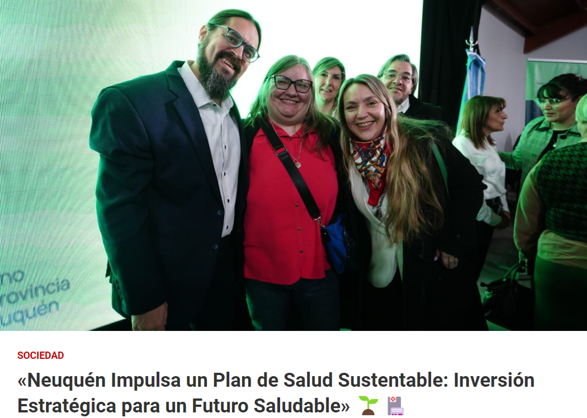
Mi aporte en la Gestión Pública.
Neuquén Presenta un Plan de Salud Transformador.
La educación financiera no discrimina. Descubrí nuestros recursos para aprender sobre finanzas sin importar tu género. Tu presupuesto debería reflejar la igualdad. Aprende cómo lograrlo aquí.Empezá a invertir en proyectos con impacto de género hoy mismo! Está disponible el libro "Diseño y Monitoreo de las Políticas Públicas en el Marco de la Gestión para Resultados". Acordate de etiquetar y compartir estos consejos con colegas y amigos comprometidos con la equidad de género. Juntos creamos un futuro más igualitario. .
Inversiones con impacto de género:
Investigá opciones de inversión que respalden proyectos y empresas que promuevan la igualdad
de género. Protegé tu futuro con un seguro que entienda tus necesidades. Empezá a invertir en proyectos con impacto de género hoy mismo!
Está disponible el libro "Diseño y Monitoreo de las Políticas Públicas en el Marco de la Gestión para Resultados".
Acordate de etiquetar y compartir estos consejos con colegas y amigos comprometidos con la equidad de género. Juntos creamos
un futuro más igualitario.
Ahorro para emergencias de género:
Asegúrate de que todos tengan acceso a un fondo de emergencia, independientemente de su género.
Empezá a invertir en proyectos con impacto de género hoy mismo!
Está disponible el libro "Diseño y Monitoreo de las Políticas Públicas en el Marco de la Gestión para Resultados".
Acordate de etiquetar y compartir estos consejos con colegas y amigos comprometidos con la equidad de género.
Juntos creamos un futuro más igualitario.
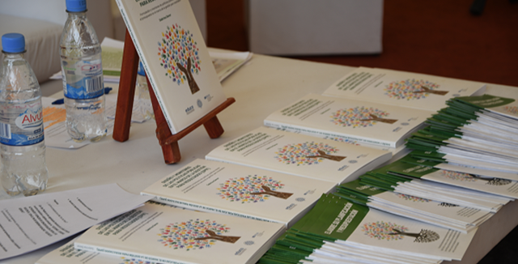
Neuquén